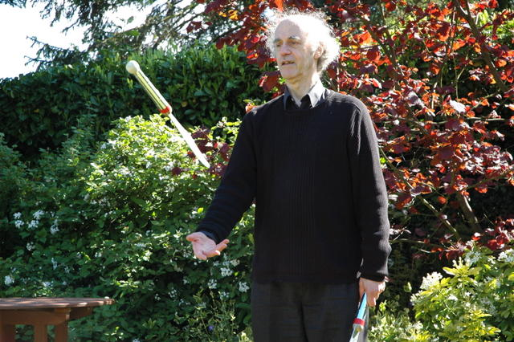

Please see:
http://www.cs.bham.ac.uk/~axs
(Updated much more often than this document)
AARON'S DOINGS
(In need of total re-organisation.)
Revised: 6 Oct 2013
Added 24 Mar 2013: Meta-Morphogenesis
In 2010 I was invited to contribute to a volume on Alan Turing, eventually published (over a year late) as Alan Turing: His Work and Impact, with detailed contents listed here. The book won several of the "PROSE" awards for 2013, including the prestigious R.R. Hawkins Award.
I had an interesting misunderstanding with the editors, that led to my contributing a paper for section IV which was not originally planned. In preparation for that I read Turing's 1952 paper on Morphogenesis (around September 2011). That gave me a new idea for organising most of the work I had been doing linking Philosophy, AI/Robotics, Cognitive Science, and Biology over half a century. I used the label "Meta-Morphogenesis" as a name for the over-arching research programme, not knowing that it had previously been used without the hyphen as the name of an album produced by the band Esoteric).
The high level goal of the project was to identify the major transitions in biological information-processing of all sorts since the earliest organisms or proto-organisms (as opposed to transitions in genome, morphology, behaviour, or habitat, which were already widely studied).
I chose the label "Meta-Morphogenesis" because some of the most important changes in biological information-processing produced by the mechanisms of change altered those mechanisms so as to extend their powers of change, over evolutionary, developmental, individual learning, or cultural time-scales.
In part this was achieved by evolving new biological construction-kits of many sorts, including construction-kits for creating new construction-kits, i.e. derived construction kits.
The concept of information that is central to all this is not Shannon's concept,
but Jane Austen's concept, shared by many people in many cultures long before
Shannon. The differences are summarised here:
http://www.cs.bham.ac.uk/research/projects/cogaff/misc/austen-info.html
Shannon understood the difference, but many of his admirers were misled by his
choice of the label "information" for his new concept (mainly concerned with
syntactic structure, not semantic content).
One of the most important, and largely unnoticed, products of evolution is accumulation and use of increasingly complex mathematical knowledge, mostly used unwittingly until recently. (Evolution: the blind mathematician)
Much of the generality and power of evolved construction kits depended on their use of powerful mathematical abstractions that could be instantiated in different ways in different contexts, the most dramatic example being the common mathematical structures underlying a huge variety of different human languages with different phonology, morphology, syntax, semantics, pragmatics, etc.
But similar points can be made about biological control systems (e.g. use of negative feedback in homeostatic mechanisms) and use of geometrical and topological abstractions in spatial perception and selection and control of physical actions.
Although much of my previous work was a contribution to this project, that connection was only implicit. There's a growing collection of papers, PDF presentations, and video tutorials and discussions, explaining the long term goals, giving examples of partial results, and linking the ideas to work by others, e.g. Annette Karmiloff-Smith's 1992 book Beyond Modularity.
Here are some of them, most still "Work-In-Progress", which is why there are few dates, and why most published versions have been, or are being, superseded.
-
http://www.cs.bham.ac.uk/research/projects/cogaff/misc/meta-morphogenesis.html
A high level overview of the project. -
Added: 2 Feb 2015
http://www.cs.bham.ac.uk/research/projects/cogaff/misc/construction-kits.htmlConstruction kits required for biological evolution
(Including evolution of minds and mathematical abilities.)
The scientific explanatory role of construction kits -
http://www.cs.bham.ac.uk/research/projects/cogaff/misc/toddler-theorems.html
Examples of "toddler theorems" and their significance for the project. - http://www.cs.bham.ac.uk/research/projects/cogaff/misc/beyond-modularity.html Personal and incomplete review of work by Annette Karmiloff-Smith which I think is highly relevant to this project.
-
http://www.cs.bham.ac.uk/research/projects/cogaff/misc/evolution-info-transitions.html
Draft list of types of transitions in biological information-processing, or Varieties of Evolved (Developed, Learnt, ....) Biological Computation. -
Added: 2 Feb 2015
http://www.cs.bham.ac.uk/research/projects/cogaff/misc/construction-kits
Varieties of construction kits, including many used in evolution, including Fundamental Construction Kit (FCT), Derived Construction Kits (DCT). There are also distinctions between concrete construction kits, whose components exist and interact in space and time, and abstract construction kits, including grammars, musical notations, formal systems, programming languages, etc. -
http://www.cs.bham.ac.uk/research/projects/cogaff/misc/bio-math-phil.html
Biology, Mathematics, Philosophy, and Evolution of Information Processing"For mathematics is after all an anthropological phenomenon." (Wittgenstein, Remarks on the Foundations of Mathematics) No, though it is partly a biological phenomenon.
-
http://www.cs.bham.ac.uk/research/projects/cogaff/talks/#agitut
PDF tutorial presentation on Meta-Morphogenesis at AGI 2012, Oxford.
A video recording of the tutorial produced by Adam Ford is available on Youtube here, (Video) with a local version here. -
http://www.youtube.com/watch?v=iuH8dC7Snno
(Video)
Aaron Sloman Artificial Intelligence - Psychology - Oxford Interview
Interviewed on video, by Adam Ford, in a fairly wide-ranging discussion, at AGI 2012 in Oxford. Dylan Holmes produced a transcript of the interview which was then revised and edited here. -
http://www.cs.bham.ac.uk/research/projects/cogaff/misc/triangle-theorem.html
Hidden Depths of Triangle Qualia -- explaining some connections between biological
abilities concerned with perception of and reasoning about possibilities (offline
intelligence) and the origins of mathematics, e.g. precursors to Euclid's Elements.
-
http://www.cs.bham.ac.uk/research/projects/cogaff/misc/architecture-based-motivation.html
Architecture-based motivation vs Reward-based motivation
(Compare the ideas of R.W. White, in "Motivation reconsidered: The concept of competence",
Psych. Review, 1959.) -
http://www.cs.bham.ac.uk/research/projects/cogaff/misc/autism.html
Autism: A Different Sort of Information-Processing -
http://www.cs.bham.ac.uk/research/projects/cogaff/misc/vm-functionalism.html
Virtual Machine Functionalism
(The only form of functionalism worth taking seriously in Philosophy of Mind) -
http://www.cs.bham.ac.uk/research/projects/cogaff/misc/unconscious-seeing.html
A demonstration of what could be called "Unconscious seeing". -
http://www.cs.bham.ac.uk/research/projects/cogaff/misc/piaget-possibility-necessity.html
Discussion of some themes in Piaget's two (posthumous) books on Possibility and Necessity -
http://www.cs.bham.ac.uk/research/projects/cogaff/11.html#1106d
Virtual Machinery and Evolution of Mind (Part 3)
Meta-Morphogenesis: Evolution of Information-Processing Machinery
Preprint for: Alan Turing - His Work and Impact -
http://www.cs.bham.ac.uk/research/projects/cogaff/misc/two-faces.html
Two faces -- a new illusion? (Demonstration of the need for perception mechanisms to be closely linked to meta-semantic competences) -
http://www.cs.bham.ac.uk/research/projects/cogaff/misc/austen-info.html
Jane Austen's implicit theory of information (in "Pride and Prejudice") contrasted with Shannon's theory.
CONJECTURE: HOW TO VIEW NATURE-NURTURE COLLABORATION
For more on this see:
-
Evolution, Life and Mind: Some Startling Facts
-
Meta-morphogenesis and the Creativity of Evolution
-
The Meta-Morphogenesis (MM) Project (or Meta-Project?)
Or: Evolution As A Theorem Prover --
Proving many theorems in parallel --
Sharing partial results among proofs --
Proving theorems about what is possible--
Delegating some theorems to toddlers
-
How can a genome specify information processing architectures that
grow themselves, partly on the basis of interaction with
environment.
-
Ontologies for baby animals and robots
From "baby stuff" to the world of adult science: Developmental AI
from a Kantian viewpoint.
-
Why (and how) did biological evolution produce
mathematicians?
Alternative title: A New Approach to Philosophy of Mathematics: Design a young explorer, able to discover "toddler theorems"
(If learning mathematics requires a teacher, who taught the first teachers?)
-
The Altricial-Precocial Spectrum for Robots, in proceedings
IJCAI, 2005.
-
member's poster presentation at AAAI06
in Boston, July 2006
-
Natural
and artificial meta-configured altricial information-processing
systems
IJUC, 2007
-
What Cognitive Scientists Need to Know about Virtual Machines.
OR the (newer) version for philosophers
-
Evolution
of minds and languages.
What evolved first and develops first in children: Languages for
communicating, or
languages for thinking (Generalised Languages: GLs)?
-
A
New Approach to Philosophy of Mathematics: Design a young explorer,
able to discover "toddler theorems"
-
Progress report on the Cognition and Affect project (2003)
(The first and third are joint papers with Jackie Chappell. Others have involved collaboration with many students and colleagues.)
Jump to Table of Contents
STARTING POINTS
This document attempts to provide pointers to work done since 1962 relating to the above conjecture. Most of the work is now online, but badly in need of reorganising. The items listed (rather messily below) can be reached from-
Begun 1st Jan 2010:
I am trying to collect all my papers into a single file (in reverse chronological order) here, starting from the bottom (1962) and working upwards.
Improving the structure will take much longer. - This page
- My home page
- The Cognition and Affect web site
- My talks web site
- The CoSy project web site
- The Free Poplog web site especially the SimAgent toolkit the overview of teaching materials.
- How to get AI programming into schools, including some tutorial videos. (Videos)
- My 'misc' site for odds and ends and new ideas and Partial list of contents.
- CONTENTS LIST FOR THIS FILE
-
Profile on the Philpapers web site
(Automatically generated: needs some editing when I get time.)
Main Philpapers page
(Incomplete: also needs some editing when I get time.)
Updates:
Look for sections labelled 2011, 2012, 2013, 2014, 2015December 2011
1. One of the developments in 2011 was actually giving an invited talk at a philosophy conference in Nancy France (normally philosophers are not interested):September 2011
Evolution of mind as a feat of computer systems engineering: Lessons from decades of development of self-monitoring virtual machinery.2. I finally read Annette Karmiloff-Smith's Beyond Modularity (1992) and realised there were deep connections with things I had been doing about philosophy of mathematics and transitions in understanding the environment from empirical to non-empirical in toddlers and possibly other animals.
(Part of the evolutionary background to human mathematical competences.)
My incomplete online review of her book is now part of a collection of discussion papers related to what I call 'Meta-Morphogenesis' (MM):
http://www.cs.bham.ac.uk/research/projects/cogaff/misc/meta-morphogenesis.htmlI have at last learnt how to make video podcasts and have started producing tutorials on AI and programming mainly for potential school teachers and their pupils, and uploading them to youtube:
A list is online here. (Video)3. In 2009 I started interacting with the Computing At School mailing list, including trying to get more attention paid to AI, and also trying to make people understand that computing is important when trying to understand the world (because so much of it is natural information processing machinery), not only when trying to improve the world. (So far my efforts have had no impact.) See
Jeremy Wyatt and David Hogg very kindly organised a symposium close to my 75th Birthday.September 2010
From Animals to Robots and Back:
reflections on hard problems in the study of cognition
http://www.cs.bham.ac.uk/~jlw/symposium_2011.html
1. Started discussions with various people on the problem:December 2009:
How can a genome specify an architecture that grows itself partly under the influence of the environment?2. Soon realised that a good way to communicate the ideas about that and a lot of other things I have been trying (and mostly failing) to communicate about may be to extend the ideas of Maynard Smith and Szathmary in their book proposing that there are eight major transitions in evolution, summarised here: http://en.wikipedia.org/wiki/The_Major_Transitions_in_Evolution
By extending the enquiry, and especially focusing on transitions in information processing in natural and artificial systems, we can find principles for seeking out additional transitions that need to be understood as achievements of evolution, which added extra complexity to the capabilities of organisms, and in many cases extra complexity to the relationship between genome and individual organism.
E.g. We can identify many discontinuities in information-processing functions and discontinuities of designs (or implementations) for achieving those functions among biological organisms. Some of those discontinuities occur in evolutionary trajectories and some in development of individuals. Perhaps some occur in both.
Studying those discontinuities, and, where appropriate, sequences of small changes that produce large qualitative differences in function or in design, may help us to understand better what relationships can hold between a genome, a developmental context, and the information processing architectures in individuals with the genome.
(In 2011 re-labelled this the study of meta-morphogenesis, mentioned above.)Many of those differences will relate to differences between environments in which organisms live, which can include results of previous evolutionary or developmental changes. So we need to study environments and the information processing problems they pose.
(Often AI research, or experiments on animals or humans, abstract away from most of the complexities of the environment, leading to discrepancies between claims and actual achievements.)
(Slides enlarging on this are in preparation and will go into my Talks directory. )
Papers and presentations on consciousness.Quite a lot of changes to the online information on Poplog, especially concerned with teaching, including an overview of Pop-11 based teaching materials for AI, Cognitive Science, etc.
October 2009
More on Virtual MachinesMay 2009
Yet another version of my attempt to explain what virtual machines are and why they are important and have a variety of features whose significance has not been widely appreciated:http://www.cs.bham.ac.uk/research/projects/cogaff/talks/#mos09
Virtual Machines and the Metaphysics of Science
Expanded version of presentation at: Metaphysics of Science'09 (September 12-14, 2009).
It is hard to get philosophers to pay attention. For some reason even while they are writing papers on the puzzling relations between minds and brains they fail to ask themselves how a spelling checker, or email program, or word processor can be running in the computer they are using, which is just made of lots of electronic devices.Helping, with Jackie Chappell, Susannah Thorpe and Nick Hawes to organise the first ever (?) symposium on AI-Inspired Biology (AIIB) to be held at AISB'10 just before Easter 2010.
http://www.cs.bham.ac.uk/research/projects/cogaff/misc/architecture-based-motivation.html
Architecture-based vs reward-based motivation and learning.
Argues that it is possible to have motives whose creation is triggered by biological mechanisms or other mechanisms without being selected because they contribute to achieving positive rewards or avoiding negative rewards. It's an anti-utilitarian view of motivation. Of course, the biological mechanisms may have been selected by evolution because they have tend to aid survival and reproductive success: but the evidence for that need not be available to individuals who have the mechanisms. They just have them and use them, because that's how they work.A modified version of this will be published in the Newsletter on Philosophy and Computers of the American Philosophical Association (APA), along with a paper on using AI to teach philosophy. (Fall 2009).
http://www.cs.bham.ac.uk/research/projects/cogaff/09.html#vms
What Cognitive Scientists Need to Know about Virtual Machines
Paper for CogSci'09 (Needs expanding). Superseded by the version for Metaphysics of Science, 2009.
Jan-April 2009
A Better Idea than Language UniversalsVision and action: requirements for seeing the real world
http://www.cs.bham.ac.uk/research/projects/cogaff/misc/opensource-and-public-funds.html
December 2008
Work on 'Toddler theorems': about ways in which a child, or adult, or animal, or future robot, can first discover something empirically, e.g. by playing, then later realise it's a theorem, e.g. of topology, geometry, arithmetic. There are also intermediate reinterpretations. Expands the work on Kantian philosophy of mathematics and robots
A new area of developmental psychology?
November 2008
Restructured and extended the section on ontology, representations and metaphysics, including adding a section on descriptive metaphysics for babies, with a presentation on possibly innate mechanisms for perceiving and learning about bits of stuff and bits of process.
May/June 2008
Kantian Philosophy of Mathematics and Young RobotsImproving teaching computing in schools: teach AI/Cognitive Science.
8 Mar 2008
New work on connection between robotics, vision, and philosophy of mathematics.
New paper on architectural requirements for a human-like visual system added to section on vision, below.(Also some rewriting of several sections.)
23 Dec 2007
Digitised my 1965 paper 'Functions and Rogators'. Now installed at http://www.cs.bham.ac.uk/research/projects/cogaff/07.html#rog
In PDF and HTML formats.
14 Dec 2007
Produced a draft paper answering five "interview" questions from Luciano Floridi about how I got into AI, etc.4 Dec 2007
http://www.cs.bham.ac.uk/research/projects/cogaff/sloman-floridi.pdf
How a Philosopher Became an Information-Scientist
Somewhat to my surprise, this was included, with very little editing, in his book L. Floridi, (Ed.) Philosophy of Computing and Information: 5 Questions, Automatic Press / VIP, 2008, http://www.amazon.com/Philosophy-Computing-Information-5-Questions/dp/8792130097
Managed to scan in and install my 1968 paper on Explaining Logical Necessity.30 Nov 2007
Inspired by problems in making the CoSy PlayMate robot perform reliably, and by other things, I have begun to develop some theoretical ideas about the importance of the ability to predict and explain changes in affordances, including changes in physical affordances and in epistemic affordances. See this discussion paper. (HTML)
19 Oct 2007
Several new talks here: http://www.cs.bham.ac.uk/research/projects/cogaff/talks/Two new invited talks for AAAI Fall Symposium 2007
http://www.cs.bham.ac.uk/research/projects/cosy/papers/#tr0704
Diversity of Developmental Trajectories in Natural and Artificial Intelligencehttp://www.cs.bham.ac.uk/research/projects/cosy/papers/#tr0705
Why Some Machines May Need Qualia and How They Can Have Them:
Including a Demanding New Turing Test for Robot Philosophers
5 Oct 2007
Added reference to interview and notes on pride.23 July 2007Invited talk "Machines in the ghost" for ENF'07 (Vienna, July 2007) to discuss AI and psychoanalysis1-3 July
PDF Slides
Full paperConsciousness in a Multi-layered Multi-functional Labyrinthine Mind Poster presentation at PAC-07 Conference, 1-3 July 2007, Bristol.24-6 Jun 2007Joint presentations with Jackie Chappell at International Workshop on Natural and Artificial Cognition (Oxford 24-26 June 2007) on Causal competences in animals and machines (Kantian and Humean Causation and the Altricial/Precocial distinction)14th June 2007Some requirements for human-like visual systems, including seeing processes, structures, possibilities, affordances, causation and impossible objects. Invited talk at COSPAL Workshop, Aalborg, June 200731st May-1st June 2007
Architectural and representational requirements for seeing processes and affordances. Invited talk at BBSRC funded Workshop on "Closing the gap between neurophysiology and behaviour: A computational modelling approach."26 March 2007Short commentary with Jackie Chappell on the book by Jablonka and Lamb, Evolution in Four Dimensions, for BBS:20 Mar 2007
Computational Cognitive Epigenetics to appear in Behavioral and Brain Sciences 2007.
Added link to talk on language and its evolution.25 Feb 2007
Expanded section on consciousness: added links to Henry Stapp's discussions of our interactions about consciousness and quantum mechanics.22 Feb 2007
Expanded section 8a.22 Oct 2006
(Added section on software engineering and government policy.)
18 Apr 2006: A brief explanation of why I now attach greater importance to putting research papers (including discussion notes, presentations, etc.) on the web than getting them into journals and conference proceedings can be found here.
CONTENTS
What have I done?
- STARTING POINTS
- UPDATES
-
Chronological list of talks and presentations since 2001
A more comprehensive and messy list of presentations, going back earlier, can be found here - INTRODUCTION
- ADMIN
- SOFTWARE
- TEACHING: MATERIALS, TOOLS AND EDUCATIONAL IDEAS
- PHILOSOPHY OF MIND
- UPSETTING VICE-CHANCELLORS AND OTHER 'SUPERIOR BEINGS'
- OTHER PHILOSOPHICAL AND SCIENTIFIC IDEAS:
- 1. Diagrammatic/visual reasoning
- 2. Architectures and requirements (Designs and Niches)
- 3. Emotions -- a special case of Affect
- 4. Virtual machines and causation
- 5. Consciousness and virtual machines
- 6. Work on vision, visual architectures and affordances
-
7a.
Work on meaning, the nature of representations, and attacks on symbol
grounding theory
- 8.a. The altricial-precocial spectrum in animals and robots
- 8.b. Learning and development in some 'altricial' animals
- 9. The Grand Challenge 5: The architecture of brain and mind
-
10. Incomplete work on an ontology for a simple (or not so
simple) agent
(with links to perception, learning, problem-solving and causation) - 11. Robotics and The CoSy project.
- 12. Ideas for de-fragmenting AI: at the IJCAI 2005 Tutorial and elsewhere
- 13. Free will
- 14. Contributions to philosophy of science
- 15. Contributions to philosophy of mathematics and philosophy of logic
- 16. Critiques of people attacking AI (Searle, penrose)
- 17. Irrelevance of Turing machines to AI
- 18. Contributions to meta-ethics: Work on the logic of 'better' and 'ought'
- 20. Why some mental states must be expressed involuntarily
- 21. Scenario based methodology for AI
- 22. Why 'intelligent design' theory should be taught to science students.
- 23. How has the study of philosophy distinguished your work or point of view?
- 24. Implications of constraints on software engineering for government policies.
- 25. Generalising Spreadsheets to non-numerical data
- OTHER TOPICS TO ADD, WHEN I GET TIME.
- Lots of slides (pdf mainly) prepared for talks in various places
- Accused of working for 'the military' ?
- Shortish CV (separate html file)
INTRODUCTION
In June 2005, Linda World, Senior Editor IEEE Computer Society, was planning an article for the July/August issue of IEEE Intelligent Systems and invited me to list my contributions to 'the field'. This was flattering but also felt a bit like being asked to write my obituary. (Her article appeared in the 'Histories and Futures' section of the journal, including a picture of my attempt to juggle with one of Richard Dearden's fake weapons.)I tried to help her, by producing a patchy list of my doings, and then realised that I had not previously produced such a list. So, mainly for my own benefit, I thought I should try to expand it a little and update it from time to time -- assuming that my ability to do things has not come to an end just because I passed the UK University retirement age of 65 in 2001.
So here is the list, warts and all, which has been slowly growing since then, but is still incomplete and unpolished.
I'll try to improve and tidy this up from time to time. Some readers trying to decide what, if anything, to look at may be helped if I can get this document to supplement the mainly chronological list of papers in the Cognition and Affect directory by grouping things by topic instead.
Much of this work is a result of work by others, e.g. people whose books and papers I read, such as Immanuel Kant, Gottlob Frege, Gilbert Ryle, Peter Strawson, Karl Popper, Imre Lakatos, John McCarthy, Marvin Minsky; colleagues with whom I worked over many years at Sussex and Birmingham, including Margaret Boden, Max Clowes, John Gibson, David Young, the Poplog team, Christopher Longuet-Higgins and Ben du Boulay; Luc Beaudoin and other PhD students in Birmingham, and more recent close collaborators, including Catriona Kennedy, Brian Logan, Matthias Scheutz, Manfred Kerber, Ron Chrisley, Jeremy Wyatt, Jackie Chappell, Push Singh (who unfortunately died in Feb 2006), the CoSy team and others I've (temporarily) forgotten. There are many more people I've met at conferences, visits to other universities, etc. who have taught me important things, especially people who were in Edinburgh in 1972-3, when Bernard Meltzer obtained a grant from the SRC to enable me to be re-born as an AI-informed philosopher. Gerry Martin played a particularly important role in my education (see below).
I've often noticed that PhD students find it hard to distinguish their own ideas from those of their supervisors, and I am sure I have had the same problem in relation to people from whom I have learnt, especially when I don't understand something I read, and then 'invent' it later.
ADMIN? Or is this Public Service?
Academic adminBuilding up two AI departments, first at Sussex university between 1973 and 1991, then at Birmingham university 1991- now. Of course, both involved teamwork: nobody can ever do anything alone, and I have been very lucky in having extremely able and willing colleagues (most of the time!)Optimistic admin
Helping the community understand what AI is and what it can aim for, e.g.Pessimistic admin?
- Overview of AI for UK Quality Assurance Agency, CS Benchmarking panel.
- Overview for schoolteachers and careers advisers
- Varieties of research in CS, AI and software engineering
- AI in a New Millennium: Obstacles & Opportunities
- helping to shape shape and promote Grand Challenge 5 (GC5) on 'Architecture of Brain and Mind' as part of the UKCRC Computing Research Grand Challenge initiative.
Helping the AI community understand what may be harder than they think!
- Requirements for Digital Companions: It's harder than you think
Position Paper for Workshop on Artificial Companions in Society, Oxford, October 2006. I tried to present some of the requirements for a truly helpful, as opposed to merely engaging (or annoying) artificial companion, with arguments as to why meeting those requirements is way beyond the current state of the art in AI (e.g. because current systems know so little about the physical environment we live in, and how we interact with it, and how things can go wrong, and what can or should (or should not!) be done about it. Workshop presentation (PDF)
- What designers of artificial companions need to understand about biological ones
Invited talk at AISB'08, Aberdeen.
- Why the recent emphasis on embodiment has held up progress
I have also been on some editorial boards, (e.g. AIJ 1997-2005 trying, without success, to get everything freely available online), and have helped to organise various workshops, conferences and tutorials, e.g.
- helping to organise the memorable 1974 first SSAISB conference at Sussex University,
- organising The IJCAI-95 'Philosophical encounter' session (with McCarthy and Minsky),
- presenting, with Matthias Scheutz a tutorial on philosophical foundations of AI at IJCAI'01,
- organising the DAM (Designing a Mind) Symposium at AISB'2000,
- helping to organise The EC Cognitive Systems 'kickoff' meeting in Bled, October 2004
- helping to organise a two-day interdisciplinary tutorial at IJCAI'05 in Edinburgh,
- a two day symposium at AISB'06 in Bristol April 2006
SOFTWARE
Managed development of the Poplog multi-language AI development system between about 1980 and 1991 at sussex, then since 1989 have managed the free open source version when it stopped being a commercial product http://www.cs.bham.ac.uk/research/poplog/freepoplog.htmlDesigned and built (with help from users) a powerful toolkit (SimAgent) used by students and collaborators in attempting to implement some of our ideas http://www.cs.bham.ac.uk/research/poplog/packages/simagent.html
TEACHING: MATERIALS, TOOLS AND EDUCATIONAL IDEAS
March 2007: new syllabus proposal for schoolsIn response to debates about why bright school children were turned off computing and did not wish to do it as a university subject (e.g. many regard computers simply as rather boring tools that that you have to learn to use with very little intellectual interest involved), I developed a draft (overview) syllabus for a two year interdisciplinary introduction to AI/Cognitive for A-level and AS-level students (final two years of school in the UK).July 2009: Online teaching materials:
http://www.cs.bham.ac.uk/~axs/courses/alevel-ai.htmlRevised version July 2009
Teaching AI and Philosophy at School?
In American Philosophical Association, Philosophy and Computers newsletter.Revised version of http://www.cs.bham.ac.uk/~axs/courses/ai-syllabus.pdf
Contributed to a lot of teaching materials on AI as part of the Poplog system and the SimAgent toolkit, e.g.
- During July/August 2009 made changes to the Poplog system, to make it more widely available, and updated information about teaching materials included and online:
http://www.cs.bham.ac.uk/research/projects/poplog/examples/
This is partly a result of my getting involved with The Computing at School Working Group
- http://www.cs.bham.ac.uk/research/poplog/teach/grammar
- http://www.cs.bham.ac.uk/research/poplog/teach/storygrammar
- and many other things here
http://www.cs.bham.ac.uk/research/poplog/teach/
- And some slide presentations for teaching here
http://www.cs.bham.ac.uk/research/cogaff/talks/Also produced notes on AI to feed into the UK Quality Assurance Agency Benchmarking Panel's deliberations: http://www.cs.bham.ac.uk/~axs/courses/ai.html
And some notes to help Careers Advisers in schools understand why they should advise gifted and adventurous students to study AI http://www.cs.bham.ac.uk/research/cogaff/misc/whatsai.html
Co-authored the out of print (mainly tutorial) book POP-11 A Practical Language for Artificial Intelligence Ellis Horwood, 1985. With: Ros Barrett and Allan Ramsay. This is partly replaced by the (more up to date) online primer for Pop11. http://www.cs.bham.ac.uk/research/poplog/freepoplog.html#primer
I think that around 1978 I first introduced TEACH files into the pop11 system which then ran on a PDP11-40 computer under Unix, and was used in quite a lot of universities, and one school, for teaching and research in AI. (Imagine living with a 32K address space of 16-bit words). The idea was to provide text that explained things interspersed with bits of code that students could select and run, or edit and run in order to explore and learn in some depth. The earliest version of the Pop-11 TEACH GRAMMAR file was developed in this context, with the help of Steve Hardy and other colleagues.
In August 2006 I was invited to produce more detailed documentation of the development of e-learning techniques at Sussex University in the 1970s and 1980s as part of a campaign against a 'moronic' US patent recently granted. So I wrote this hasty history. (Also referenced under 1976 in this wikipedia history of e-learning environments.)
Some related comments about our educational dreams in the 1970s and why they failed because of bad decisions made by politicians, educationalists, teachers, parents and others can be found in the third section of an expanded version of my acceptance speech for a DSc given to me by Sussex University in July 2006.
Some of my ideas about education (influenced in part by John Holt, Seymour Papert, and Ivan Illich) including the profound new opportunities offered by the use of computers (unfortunately still not really taken up by the education world as a whole) were presented in the The Computer Revolution in Philosophy and more recently in a paper contributed to the UKCRC initiative on Grand challenges in Computer Education for the March 2004 conference, available online http://www.cs.bham.ac.uk/research/projects/cogaff/misc/gc-ed.html">in PDF and HTML formats. This was included in the UKCRC booklet on educational grand challenges available on their 'Grand Challenges' web page.
I recently recently discovered that many of the points were made quite effectively in Jeannette Wing: 'Computational Thinking', CACM vol. 49, no. 3, March 2006, pp. 33-35, available online here (PDF) (with accompanying slides).
How to organise higher education more sensibly
Including a letter to my MP about why both people arguing for and people arguing against top up fees made serious mistakes.
PHILOSOPHY OF MIND
(Added Feb 2006)
Much of my work fits into the part of philosophy labelled `Philosophy of Mind' which seeks (among other things)Starting with my 1978 book I have been trying to extend traditional philosophy by pressing for a 'design-based approach', summarised here, which contrasts with (among other things) the 'intentional stance' recommended by Dan Dennett and what Alan Newell called 'the knowledge level' (both mentioned below). More recently I've expanded that approach to philosophy of mind to include considerations of evolution and development, and location of humans in a much larger space of designs and requirements discussed here.
- to analyse many of the concepts we use in talking and thinking about minds, mental states, and mental processes; for example, concepts like: 'perceive', 'learn', 'believe', 'want', 'enjoy', 'desire', 'intention', 'puzzlement', 'attention', 'notice', 'wonder about', 'forget', 'deliberate', 'react involuntarily', 'decide', 'aware', 'mean', 'refer', 'understand', 'grasp a concept', and many others. (See, for example, chapter 4 of the Computer Revolution in Philosophy (1978))
- to explain the relation between mental and physical phenomena and in particular to explain how physical phenomena can produce mental phenomena and how mental events can cause physical events and processes. (See, for example, this talk on information processing in virtual machines).
- to explain how we can know anything about minds, whether other minds or our own minds (which I think is just a special case of the question how we can know what's going on in virtual machines).
In the January 2006 (fiftieth anniversary) edition of AI Expert Newsletter (assembled by Jocelyn Paine), I found a quotation from the online version of The Computer Revolution in Philosophy that I think sums up my approach to philosophy of mind. So I'll quote it here:
Some parts of the book are dated whereas others are still relevant both to the scientific study of mind and to philosophical questions about the aims of science, the nature of theories and explanations, varieties of concept formation, and to questions about the nature of mind.Some of that thinking arose from learning to program and from reading AI (especially Minsky's work, e.g. 'Steps towards Artificial Intelligence' (1963) and his 1968 collection Semantic Information Processing), while some of it was inspired by Chomsky's attack on Skinner's behaviourism, and his ideas about the difference between characterising/explaining 'competence' and 'performance'. (Chomsky applied those ideas only to syntactic competence, but the competence/performance distinction was clearly far more general. My most recent use of Chomsky's ideas was in a paper [listed below] explaining why the finiteness of physical brains or computers does not prevent them implementing infinite virtual machines.)In particular, Chapter 2 analyses the variety of scientific advances ranging from shallow discoveries of new laws and correlations to deep science which extends our ontology, i.e. our understanding of what is possible, rather than just our understanding of what happens when.
Insofar as AI explores designs for possible mental mechanisms, possible mental architectures, and possible minds using those mechanisms and architectures, it is primarily a contribution to deep science, in contrast with most empirical psychology which is shallow science, exploring correlations.
This "design stance" approach to the study of mind was very different from the "intentional stance" being developed by Dan Dennett at the same time, expounded in his 1978 book Brainstorms, and later partly re-invented by Alan Newell as the study of "The knowledge Level" (see his 1990 book Unified Theories of Cognition). Both Dennett and Newell based their methodologies on a presumption of rationality, whereas the design-stance considers functionality, which is possible without rationality. as insects and microbes demonstrate well. Functional mechanisms may provide limited rationality, as Herb Simon noted in his 1969 book The Sciences of the Artificial.
I have recently tried to show that Gilbert Ryle's notion of doing conceptual analysis as studying 'logical geography' can be enriched by basing it on a more fundamental analysis of 'logical topography' which reveals the possibility of alternative logical geographies in the same portion of reality. More details are below.
Multi-disciplinarity
Over the years I have gained an increasing appreciation of the importance of placing philosophy of mind in a multi-disciplinary context, which means that doing it really well requires the equivalent of getting degrees in more disciplines than most people have any hope of achieving in their lifetime (especially in current academic climate which applies so much pressure to specialise, in order to get publications in recognised journals, etc.). I attempted to summarise the arguments in a posting to the psyche-b email list in 2003, now available online hereFrom Aaron Sloman Fri Jan 17 03:47:20 GMT 2003
Subject: pre-requisites for discussing consciousness
http://www.cs.bham.ac.uk/research/cogaff/misc/consciousness-requirements
UPSETTING VICE-CHANCELLORS AND OTHER 'SUPERIOR BEINGS'
I'll try to complete this section one day. I seem to have done a lot of upsetting in my time because I do or say what I think is right (though I am also willing to apologise when proved wrong, unlike some of the people I have upset).Here are some examples: failing lots of mathematics students in a logic exam in my first job (because nobody had told me that it was traditional in that university for the logic course to be a 'soft' option for mathematicians), telling a Vice Chancellor in the same university that ensuring clean cutlery in the student canteen was more important than ensuring purity of language in student newspapers (he had recently banned the student newspaper because it used some words he did not like), objecting to vastly expensive speeding up of landscaping in another university, just because the Queen was to visit, challenging a Dean who refused to allow a proposal to go in to meet a deadline, on the grounds that the committee responsible for discussing such things was not due to meet until after the deadline (fortunately, an intelligent Pro-Vice-Chancellor half his size over-ruled him), writing to the prime minister (then Margaret Thatcher) complaining about how high level decisions of the Alvey Directors and Science & Engineering Research Council had been distorted by pressures from a UK computer company, and explaining why a 'Buy British' policy for research equipment could produce an under-resourced and unnecessarily ignorant research community (to my amazement the letter had some effect), objecting to a Dean (in one of my former universities) who broke an informal promise to some colleagues who had joined us, objecting to a Vice Chancellor's notion of how we should run our school, .... and then there's re-branding. My aim is not to upset, but to raise standards, but too many people don't like having their mistakes criticised. As for me: that's how I have learnt!
People should always be ready to learn.
In compensation for the above, I have tried to teach people how to be good managers (e.g. when selecting staff always try to make sure that you appoint people who are better than you are), and several of my former students and colleagues are now in senior posts (including one who has been a Pro Vice Chancellor).
If I have learnt anything about good management, my most important mentor was Gerry Martin, founder of Eurotherm and other companies, a very gentle man who showed me many things that universities (at least in the UK) do wrong. Alas, he died in 2004. Alan Macfarlane has written much about him and collected some of Gerry's writings here. Patrick Reader wrote an obituary in The Independent.
One of the most important things I learnt from Gerry is that UK universities generally fail to provide recruitment processes with the effort they deserve: he and I were allowed to do the preliminary selection of a potential chief executive of a technology transfer company for AI at Sussex University. We had about 90 applicants. He insisted that we interview about 20 of them, and insisted that each interview last at least half a day. I then learnt why UK universities make so many inadequate appointments and often suffer the consequences for many years thereafter. In my current university that has got worse because of all sorts of pressures from personnel staff who do not understand what selection of teachers and researchers means, and so much pressure on the time of academics that they simply cannot afford to risk damaging their own careers by putting in the effort that staff-selection really requires. How sad for universities and for future students. (American universities seem to do a far more thorough job).
OTHER PHILOSOPHICAL AND SCIENTIFIC IDEAS:
Not yet in any meaningful order -- just the order in which I thought of them when composing the list, and then mangled during updates.1. Diagrammatic/visual reasoning
DPhil thesis Oxford 1962
Title: Knowing and Understanding:Relations between meaning and truth, meaning and necessary truth, meaning and synthetic necessary truthTrying to understand and defend Kant's claim that there is something about mathematical discovery that is not just logical deduction from definitions, especially in geometrical reasoning. This was extended in various papers, including my 1968 paper on Explaining Logical Necessity. (I am still working on this general topic.)At IJCAI in 1971 presented a paper discussing a distinction between 'analogical' and 'Fregean' representations, and attacking a very influential 1969 paper by McCarthy & Hayes.
I argued that their logicist approach to AI was not wrong in itself, but needed to be extended to include (among other things) reasoning with diagrams, which I generalised to 'analogical' representations that use relations and properties to represent relations and properties, instead of using only Fregean representations (named after the great logician Gottlob Frege) in which explicit symbols are used to represent relations, as in algebra and logic. I gave some examples, and some reasons why the notion of rigorous reasoning could include diagram manipulation. The paper was reprinted in the AI Journal, in a Book on representations, and in a modified form as Chapter 7 of The Computer Revolution in Philosophy.
In the paper I also explained why 'analogical' representations should not be defined as isomorphic with what they represent -- a common error among the many people who have rediscovered the importance of diagrammatic/spatial reasoning.Quite a lot of people have referred to the 1971 paper (and its successors.) I was not the first to make these points, of course. E.g. see Poincare's idea's about mathematical intuition, a century ago, also summarised here.
I wrote several sequels to the paper, qualifying some points and developing the ideas, including the 1975 Afterthoughts paper, some further developments regarding ontologies and criteria for adequacy in a paper on why we need many knowledge representation formalisms (presented in 1984, published 1985), a general overview published in 1996 Towards a general theory of representations and several other papers.
Some recent work expanding on this is in papers on diagrams in the Cogaff directory, e.g. Title: Diagrams in the Mind?
and this talk Requirements for visual/spatial reasoning
I also have an incomplete draft paper linking various kinds of information processing, including perception of affordances, to the ability to do reasoning with diagrams.
The most advanced working implementation of this idea that I know of is a recent PhD thesis in Edinburgh by Daniel Winterstein But the task has not yet been completed.
I am still working on the ideas partly in the context of work on vision, and affordances and in attempting explain some aspects of how children learn about causation.
Diagrammatic reasoning about affordances
Inspired partly by problems in making the CoSy PlayMate robot perform reliably, and by other things, I began in November 2007 to begun to develop some theoretical ideas about the importance of the ability to predict and explain changes in affordances, including changes in physical affordances and in epistemic affordances. See this discussion paper. (HTML)There is more about affordances below in connection with vision.
See also work on Philosophy of Mathematics, below.
2. Architectures and requirements (Designs and Niches)
Early ideas about architecturesAfter I learnt about AI it soon became clear to me that an intelligent system would need an architecture combining multiple interacting components performing different tasks, including internal self-observation. I first wrote about this in memo 59 in the Edinburgh University Department of Computational Logic, while I was visiting Edinburgh in 1972-3. It was slightly revised for the AISB Newsletter in 1973. (I can't find copies of either of those. Memo 59 was probably destroyed in the fire in Edinburgh 2002.)The ideas were further developed in chapter 6 of 'The Computer Revolution In Philosophy' and chapter 9 (on the architecture of a simple vision system).
With PhD students (e.g. Luc Beaudoin, Ian Wright, Tim Read, Steve Allen, Catriona Kennedy, Dean Petters), and other colleagues mentioned above, I have been developing these ideas ever since.
Design space and niche space (the space of sets of requirements)It soon became clear to me that there was not just one 'right' kind of architecture, but a wide variety of architectures, including many produced at different times and in different environments by evolution, and also different architectures in different stages of development of the same species, e.g. human infants, toddlers, children, teenagers, professors...So unlike many AI researchers who tried to recommend one architecture for intelligent systems (ACT, ACT-R, SOAR, PRS, PRODIGY, CLARION, THEO, Contention scheduling, and many more) I stressed the importance of exploring both design space (the space of possible architectures) and niche space (the space of sets of requirements -- though biologists use 'niche space' to refer to something different) and their relationships. The idea that there were interacting trajectories in both spaces is, as far as I know original, and still requires to be developed.
The ideas developed gradually during the last 30 years. One of the check-points was an invited talk in Norway: Exploring design space and niche space (1995)
Another was the introduction to a workshop on Designing a Mind organised in 2000 Models of models of mind which explored dimensions in which architectures could vary.
The work split into two streams fairly early on, summarised briefly in a PDF presentation on 'Architectures for human-like machines'
CogAff: towards an Ontology for complete architectures
Trying to devise an ontology for describing complete architectures to help the research community compare and contrast rival proposals: The CogAff schema described in several papers, based on a three-fold distinction between reactive mechanisms, deliberative mechanisms, and meta-management mechanisms with meta-semantic competence, and an orthogonal three-fold distinction between perceptual, 'central' and action mechanisms, produced a nine-fold collection of component types. But this is clearly a crude and inadequate ontology and work still progresses on intermediate cases (e.g. proto-deliberative mechanisms) and on filling in the details of the various categories.One unusual aspect of this work is its emphasis on architectural layers in the perceptual and action subsystems which are conjectured to have evolved in parallel with central layers. In contrast, most people working on architectures have only 'central' layers, and their relations to perception and action are unclear. (In the more detailed work I have used the labels 'peephole' vs 'multi-window' for perceptual and motor subsystems that are single-layered vs multi-layered (using different levels of abstraction).
Added 2 Feb 2015
The original depiction of the CogAff schema was as a 3x3 grid, with three horizontal "layers" corresponding to stages of evolution (oldest, purely reactive, at the bottom, with newer deliberative layer above that, and the newest Meta-management layer at the top, superimposed on three columns: perceptual mechanisms, central mechanisms, and action mechanisms. But that did not do justice to the actual overlaps, e.g. subsystems integrating perception with action (such as saccadic eye movements, use of hand motion to sense type of surface, etc. That led (after prompts and help from Dean Petters) to this diagram of three overlapping vertical cylinders sliced horizontally:

Revised Cogaff SchemaThe H-CogAff architecture
Trying to construct and elaborate a hypothetical architecture H-CogAff, an instance of CogAff, rich enough to explain many aspects of human minds, including the ability of human architectures to grow themselves. See http://www.cs.bham.ac.uk/~axs/fig/your.mind.jpgThe H-CogAff (schematic) architecture was an enriched version of the CogAff architecture schema
Some time during the course of this work Marvin Minsky and I discovered that we were developing related ideas, but with different emphases and some different terminology
e.g. I think he is more concerned with a focus on human-like systems and I am more concerned with trying to understand the space of possibilities; also he makes more fine-grained distinctions between architectural levels and therefore comes up with more levels. This is in his draft book, The Emotion Machine, on his web site. (Later published in 2006)(Some of the overlap must be a result of the deep impact some of his earlier writings had had on me in the early 1970s, including 'Steps Towards Artificial Intelligence' the introduction to the 1968 book Semantic Information Processing and his paper 'Matter mind and models', on his web site.)
2 Feb 2015: Dynamical systems
The above diagrams did not give any indication of how acquired knowledge and skills were implemented in the various layers and columns of the architecture. A paper written around 2007 presented some ideas about multiple layers of linked dynamical systems, with different subsystems concerned with different domains, and with excitatory and inhibitory links both within and across subsystems, as depicted in the diagram on in the section on dynamical systems below .
The spectrum of deliberation: from proto-deliberative to fully-deliberative systems.I have gradually come to realise that what people mean by 'deliberative' varies so much that it is almost useless as a technical term. This HTML web site is an attempt to redress this: COSY-DP-0604: Requirements for a Fully Deliberative Architecture
Somatic/multi-modal/sensorimotor vs Exosomatic/amodal/objectiveOne of the issues regarding architectures that is not often acknowledged explicitly is that different architectures, and different parts of the same architecture may use different ontologies. I.e. they refer to, get information about, use information about, different sorts of things in the world. It has become clear in recent years that many researchers in AI, philosophy, neuroscience, and psychology have implicitly assumed that a sensorimotor ontology will suffice for all organisms and robots, i.e. an ontology concerned with patterns, associations, probability distributions within sensory signals and motor signals, at various levels of abstraction. We could refer to this as a 'somatic' ontology ('soma' = 'body' in ancient Greek).
[Earlier I called this 'intra-somatic' in contrast with 'extra-somatic' (with or without the hyphens), till another pendant reminded me that while 'soma' is Greek, 'intra' and 'extra' come from Latin. So I have switched to using 'somatic' and 'exosomatic'.]In contrast much work is concerned with what the animal or machine knows about objects, relations, processes and states of affairs in the environment, independently of how that information is acquired or how used in actions. We could refer to this as an 'exosomatic' ontology. I believe there is much confusion about this, which in its simplest forms amounts to simply focusing attention on the somatic and ignoring the exosomatic entities, an attitude encouraged by the fact that at first sight the brain has only somatic information to operate on. A web site developed during the CoSy project, to try to get clear about these issues is
COSY-DP-0603: Sensorimotor vs objective contingencies (HTML)This is linked to confusions about 'symbol-grounding' discussed elsewhere.
Self-extending networks of multi-stable dynamical systems
Reflections on requirements for vision, including the speed requirement illustrated in this PDF presentation, led me during 2007 to start thinking about complex networks multi-stable multiply-connected dynamical systems most of which are dormant at any time but through which activation and suppression signals could propagate at high speed turning subnets on or off under the control of a mixture of bottom-up, top-down, middle-out and sideways constraints. A few sketchy ideas about this were presented in the paper on Architectures written for a workshop in 2007 summarised below.
{kind=link}
3. Emotions -- a special case of Affect
I am not particularly interested in Emotions except as a subset of the broader class of affective phenomena (including pleasure, pain, desires, preferences, attitudes, moods, values, ideals, motivations, etc.) that need to be explained within the framework of the architectures proposed. (I had a few comments on that in my 1978 book). All of these, in turn, are special cases of or products of biological control mechanisms, whose variety and depth go unnoticed by many who study emotions.
An incomplete list of publications related to the work in this area here can be found in
http://www.cs.bham.ac.uk/research/projects/cogaff/misc/emotions-affect.html
THE COGAFF PROJECT: Papers in the Birmingham Cognition and Affect project. (Still being assembled.)
I don't work on what is now referred to as "Affective computing", which mostly seems to involve producing machines that attempt to recognize emotional or other affective states in humans or which attempt to simulate such states by means of such things as changes in facial expression, tone of voice, and gestures. Much of that work ignores the deeper issues about architectures that need to be addressed in order to understand how affective states and processes relate to all the other aspects of a human mind.In 1997, I wrote a partly critical partly complimentary review of Rosalind Picard's pioneering book Affective Computing. My review is available here with a link to her response. Both were published in The AI Magazine, though errors by the copy-editor which I failed to spot were in the printed version of my review, so use only my online version.
Some people seem to think I am specially interested in emotions and/or affective computing because I wrote a paper with Monica Croucher, presented at IJCAI in 1981, entitled 'Why robots will have emotions', which they have misread or misremembered as 'Why robots should have emotions'. (The paper is online here: Why robots will have emotions.)
Another paper with Monica Croucher proved to be unpublishable, but was a Sussex University Technical report in 1981, and has been cited by others:
You don't need a soft skin to have a warm heart: Towards a computational analysis of motives and emotions. (Originally a Cognitive Science Research Paper at Sussex University: CSRP 004, 1981.)I later wrote a few other papers on emotions including these:
Anger and other emotions:Emotions recently started becoming a fashionable subject of study partly for bad and confused reasons (including a fallacious argument presented in Damasio's 1994 book), so I started trying to write papers and give presentations explaining the confusions.
Towards a grammar of emotions (1982), taking anger as a special case.NB: this is not a paper about how we talk about emotions, as the title might suggest, but about the structural diversity of emotions and the processes involved in their growth and decay.Motives Mechanisms and Emotions (in Volume 1 of the journal Cognition and Emotion, 1987. Reprinted in M.A. Boden (ed), The Philosophy of Artificial Intelligence, OUP 1990)
Grief:
Towards a Design-Based Analysis of Emotional Episodes
with Ian Wright and Luc Beaudoin.The paper explored in some detail the phenomena reported by someone recently recently bereaved on the 'alt.grief' internet news group, and attempted to show how many of the details might be explained within the framework of our proposed (but very sketchy) architecture -- a precursor of H-CogAff. The paper was published, (with commentaries) in Philosophy Psychiatry and Psychology, vol 3 no 2, 1996, pp 101--126. A html version of the paper, including the commentaries, byis available at the Journal's web site followed by a reply by the authors.
- Dan Lloyd,
- Cristiano Castelfranchi and Maria Miceli
- Margaret Boden
A presentation for a popular audience is here: Talk 28: Do machines, natural or artificial, really need emotions? (2004)One of the things I tried to do was explain how shallow theories of emotions failed to account for the full variety of types of cases. So whereas other people distinguished primary and secondary emotions, I showed how in the framework of the H-Cogaff architecture we could also distinguish tertiary emotions (involving the meta-management layer). But there are actually far more subdivisions to be made. People who design AI architectures with a box labelled 'emotion' have failed to understand the richness of the phenomena.
More recently, with Matthias Scheutz and Ron Chrisley I have tried to produce a theoretical framework for studying varieties of affect in organisms (from primitive organisms to humans) and machines, including emotions as a special case of affect:
The Architectural Basis of Affective States and Processes (Just published in a chapter of a book: Who Needs Emotions?: The Brain Meets the Robot, OUP in which the copy-editor mangled our paper.)Although I don't claim to be an emotion-researcher, I sometimes join in discussions of the email list of ISRE (International Society for Research on Emotions). An example (July 2005) is here.
In December 2005 I wrote some quick answers to short questions about emotions sent to me by a well known emotion researcher.
A longer messy (incomplete) file listing things I've written about emotions is here.
I have some notes on pride that I wrote as a result of being interviewed by Jeremy Webb in 1998 for a new Scientist article. The discussion led to some useful clarification of several points about varieties of emotions and other kinds of affective states and processes.The correspondence is here:
http://www.cs.bham.ac.uk/research/cogaff/pride.htmlhttp://www.newscientist.com/article/mg15721275.400
The article (now available free of charge) starts28 March 1998, Magazine issue 2127
"DO birds consider whether the nest they have built is better than the one built in the next tree?" asks Aaron Sloman, professor of artificial intelligence and cognitive science at the University of Birmingham. "I doubt it." If his assessment is correct, it's a safe bet that you won't find a bird that feels pride. Sloman's point is that being proud isn't easy. At the very least you need a sense of "self" and a way to compare yourself with others. So feeling superior takes a higher level of mental complexity than most animals can muster. That doesn't apply to all emotions. The fear that keeps animals out of the path of a predator or a speeding car, for instance, is almost universal across species and needs little or no thought. But it's the complex emotions like pride that fascinate Sloman. He believes that they arise naturally from the information-processing ...
4. Virtual machines and causation
Apart from the sorts of divisions between layers of functionality mentioned above there is a deeper notion of layers of virtual machines depicted crudely in this diagram showing multiple levels of reality where higher levels are implemented in the lower levels, as opposed to running in parallel with them performing different tasks.Philosophers often refer to this relation as 'supervenience'. Unfortunately they tend only discuss supervenience of states and properties -- e.g. how can a property of being angry supervene on brain states. What they should discuss, but mostly ignore, is how machines can supervene on other machines, especially how virtual machines can supervene on physical machines. E.g. see the link above.
I have written several papers and given presentations on what the relations are between levels, and how it is that there can be causes and effects within higher level virtual machines.
Perhaps the hardest unsolved problem in philosophy is analysis of the notion of 'causation'. (A D.Phil student I supervised at Sussex, Chris Taylor, produced a very interesting thesis in 1992 that has only recently been made available online.)I believe the problem of how events in virtual machines can be causes is not only important for philosophers trying to understand the relations between mind and brain and trying to make sense of notions like mental processes causing actions (along with muddles about free will) but also important for scientists trying to understand how minds work by studying neural phenomena.
A talk on this can be found here: Talk 26: What are information-processing machines? What are information-processing virtual machines?
I argue that besides matter-manipulating and energy-manipulating machines there are also machines that manipulate information, though we are still in the early stages of understanding their variety and producing any sort of general theory about them. Computer scientists think their general theory of computation does that, but they are only discussing a subset of the phenomena.Evolution started producing very sophisticated examples long before we did, and that is part of what made the evolution of humans possible.
I argue that like 'energy', and most other deep concepts from the natural sciences, 'information' is a notion that cannot be explicitly defined in terms of more familiar or simpler concepts, but can be implicitly be defined with increasing depth and precision as our theories about its varieties, forms, functions, consequences, etc. develop. (As happened with our concept of energy.)
A peculiar feature of information processing machines is that the most powerful examples are all virtual machines, whose components and internal processes are not describable in the language of the physical sciences, even though they all have to be ultimately implemented in physical machines.
A controversial claim I make about virtual machines is that events and processes in virtual machines can be causes, both of other virtual machine events, processes and states and also of physical events, processes and states, for instance when an operating system detects an attempt to access a protected file and produces a message on a screen, or a robot reasons that its current plan will lead to damage and therefore alters its direction of movement. Analysing our notions of causation is a very difficult task, not least because we need two different concepts a Humean (correlational, probabilistic) and a Kantian (structure based, deterministic) concept, both of which are unavoidable in science, engineering and everyday life, including the life of infants.
Matthias Scheutz and I gave a tutorial on Philosophy of AI at IJCAI in 1991 which included discussion of virtual machines and causation (among other things): http://www.cs.bham.ac.uk/~axs/ijcai01/
A short unpublished letter to New Scientist, commenting on a letter by Daniel Dennett and Andy Clark about consciousness, and 'realisation/realization' is here Realisation and Virtual Machines
A more recent presentation on virtual machines for a general audience is Virtual Machines in Philosophy, Engineering & Biology (at WPE 2008)
A short (six page) conference paper summarising the issues for an interdisciplinary audience.
There is more about virtual machines and causation in COSY-TR-0807 (PDF): The Well-Designed Young Mathematician
Published in AI Journal December 2008.
5. Consciousness and virtual machines
I have been arguing for some time that people who regard the noun 'consciousness' as having some sort of definite reference so that they can ask questions like the following are just confused: 'When did it evolve?' 'Why did it evolve?' 'Which animals have machines it?', 'Which machines have it?', 'At what stage of development of a foetus does it first occur?', 'At what stage is it lost in various degenerative brain diseases?'
That is not because consciousness is a matter of degree as some people suppose (e.g. Susan Greenfield), nor because there is some mysterious truth which is inaccessible to us, but because the questions are muddled because the concepts they use are muddled.
This point is related to but different from the point made by Minsky in labelling 'consciousness' a suitcase concept. Philosophers sometimes talk about 'cluster concepts' which are mixtures without definite boundaries. These comments on consciousness are correct, but in addition it is important that sometimes people trying to explain what they mean by 'consciousness' (or 'free-will', or 'god', or 'goodness', or 'reality') end up gesturing at subtly incoherent concepts.The muddle is something like, but much more subtle than, the muddle involved in asking 'Which way is the universe moving?', or 'Exactly when does a new century begin - 1st January 2000, or 1st January 2001?', or 'Where exactly does the earth have to be in relation to the sun for a new day to start?', or 'When exactly is it midnight on the moon?'.Added: 19 Dec 2009
One of the main sources of muddle, which I have only recently understood clearly is that the concept "X is conscious of Y" is polymorphic in the same sense as "X is an efficient Y", "X is a cure for Y", "X is a tall Y", "X is a perfect specimen of Y", and many more.They are all polymorphic in the sense that the instances of the patterns have very different meanings which depend on the what is substituted for "X" and for "Y", and also on the context of use. This is very obvious in examples like "tall house", "tall giraffe", "tall mouse", where there is no fixed height that has to be exceeded for something to be tall. Likewise there is no fixed set of properties that anything has to have in order to be efficient, or a cure, or a perfect specimen: it will depend at least on Y and the context, and sometimes on the type of thing X is.
This can be regarded as similar to the Computer Science concept of "Parametric Polymorphism" except the polymorphism of ordinary language concepts is not always made explicit by the provision of explicit disambiguating parameters: rather the parameters often have to come from the context.
I think that to a first approximation "X is conscious of Y" is a statement about X having access to information about Y which it can use in some way. But the requirements for this vary enormously depending on what Y is (the time of day, a toothache, somebody's unpopularity, the colour of a fingernail, a fallacy in a proof, the risk in an action, etc.), and also what X is. These points are elaborated in a long paper on the concept of phenomenal consciousness, and an associated tutorial, both provoked by the very mixed and only partially comprehending reactions to a paper I wrote.
Those items can be regarded as updated versions of this 2001 slide presentation (PDF): http://www.cs.bham.ac.uk/research/projects/cogaff/misc/talks/#talk9
- http://www.cs.bham.ac.uk/research/projects/cogaff/talks/#cons09
Why the "hard" problem of consciousness is easy and the "easy" problem hard. (And how to make progress) (PDF tutorial presentation)
Also on slideshare.net in flash.
- http://www.cs.bham.ac.uk/research/projects/cogaff/09.html#906
Phenomenal and Access Consciousness and the "Hard" Problem: A View from the Designer StanceThis was published, along with a related paper and commentaries, in Vol 2, Issue 1 of "International Journal of Machine Consciousness"
Unfortunately, the commentaries are not freely available, only my responses, which could be very unfair to commentators.
- http://www.cs.bham.ac.uk/research/projects/cogaff/09.html#910
An Alternative to Working on Machine Consciousness.
Invited "target" article too hastily written for International Journal of Machine Consciousness.Partial attempts to expose the confusions can also be found in these unpublished discussion papers
In a usenet posting which I had forgotten, but recently discovered quoted by Marvin Minsky here, I once put the point thus: "It is not worth asking how to define consciousness, how to explain it, how it evolved, what its function is, etc., because there's no one thing for which all the answers would be the same. Instead, we have many sub-capabilities, for which the answers are different: e.g. different kinds of perception, learning, knowledge, attention control, self-monitoring, self-control, etc." (posting to comp.ai.philosophy circa December 1994).
- The evolution of what?
- 'What is it like to be a rock?'
(A semi-serious paper, which seems to be one of my most frequently referenced.)As an antidote to the confusions I have for some time being trying to argue that if we think of a mind as a control system, then we can see that there are very many types of control system, as pointed out in The mind as a control system. Some control systems include quite sophisticated self-monitoring, and can to that extent be described as having particular kinds of self-consciousness that other systems lack. The full variety of types of process needed to replicate all the phenomena that cause humans to be aware that they have minds and to be puzzled by what they know has not yet been analysed.
Some of the more subtle phenomena are mentioned in this paper Virtual Machines and Consciousness, (written with Ron Chrisley for a book edited by Owen Holland, and published in JCS). In particular we try to show how a self-monitoring system that develops its own ways of categorising its internal states using some sort of self-organising classifier, would have concepts that are 'causally indexical' and inherently incommunicable to others. This is a core part of the explanation of the phenomena that make philosophers and others want to talk about 'qualia' or 'what it is like to be a so and so' (a deeply seductive piece of disguised nonsense).
A strategy I recommend strongly, but which puzzles and irritates people who want to talk about consciousness, is this:
The best way to understand consciousness is to stop talking about it and instead try to analyse and explain everything else (including sensing, perception, remembering, inferring, explaining, noticing, attending, being surprised, being puzzled, stopping being puzzled, wanting, preferring, disliking, being obsessed, falling asleep, waking up, being hypnotised, and many, many more). Then it will turn out that everything of substance that could be said or asked about consciousness will already have been covered.Some other things related to consciousness (Added 25 Feb 2007)A slide presentation on learning to experience a 3-D environment containing manipulable objects and many affordances, illustrates the approach.
- Interactions with Henry Stapp (and others) on consciousness and quantum mechanics. This went on for several years, and involved Pat Hayes, David Chalmers, Kathy Laskey, Stan Klein, and others. See Henry Stapp's website for details:
http://www-physics.lbl.gov/~stapp/stappfiles.htmlExamples:
Reply to Aaron Sloman on Science and the Human Person (Dec 14, 2000)
Reply to Sloman and Hayes, Nov 6, 1999
Classical Physical Theory vs Pragmatic QT. [Reply to Sloman] Sept 24, 1998
And others- Notes on a presentation at the Royal Society of Arts on Consciousness on 26th Feb 1996: http://www.cs.bham.ac.uk/research/projects/cogaff/misc/consciousness.rsa.text
A systems approach to consciousness (How to avoid talking nonsense?)I am embarrassed to be writing about consciousness because my impression is that nearly everything written about it, even by distinguished scientists and philosophers, is mostly rubbish and will generally be seen to be rubbish at some time in the future, perhaps two hundred years from now. This means that my own work is probably also rubbish.However I shall outline some ways in which we can hope to make progress through collaborative, multi-disciplinary research. By doing this work we are sure to learn something!
First, I need to distinguish three different types of questions, empirical questions, design questions and conceptual questions. Design questions are at the heart of our problems.
6. Work on vision, visual architectures and affordances
(Updated 8 Mar 2008, and 8 Mar 2009)6.a How my work on vision started
My work on vision in AI goes back to discussions with Max Clowes whom I met around 1969. Unlike most AI vision researchers, I was largely motivated by attempting to show that human visual capabilities are closely related to human mathematical capabilities, especially our ability to reason about geometrical and topological structures and processes. This led to my first AI publication http://www.cs.bham.ac.uk/research/cogaff/04.html#200407 (paper in IJCAI 1971) arguing against the logicism of (McCarthy and Hayes, 1969). I tried to show that intelligent agents will sometimes find it useful to reason with analogical representations. But I was aware then (and stated in the paper) that a lot more work was needed to enable machines to understand and reason about spatial structures. That paper got me an invitation from Bernard Meltzer to spend a year (1972-3) in Edinburgh during which I learnt a lot more about AI, vision and robotics.A few years later (around 1975) a UK research council grant enabled me to work (at the University of Sussex) on implementing a first draft visual architecture (with much help from David Owen, then later Geoffrey Hinton and Frank O'Gorman). We developed the Popeye program, described in Chapter 9 of The Computer Revolution in Philosophy. The work was too unfashionable and our request for funds to expand it was unsuccessful.
I have continued working vision intermittently since then -- mostly clarifying requirements, and also partially specifying designs for a visual architecture.
In 1982 I was invited to give a talk on Image Interpretation, The Way Ahead? at an international symposium organised by The Rank Prize Funds, London, Sept 1982. The proceedings were published in 1983. This paper enlarged the requirements specification, for instance pointing out for visual control of actions it was sometimes more effective to compute changing 2-D relations in the optic array (or image plane) rather than working out the full 3-D structures and 3-D relations of the objects involved in the action. I believe that much confused theorising about visual pathways concerned with "what" vs "where" information was based on a failure to understand that distinction properly.
The distinction was later confusingly described by Milner and Goodale as being a distinction between "perception" vs "guidance of action", e.g. in The Visual Brain in Action (1988).As a result of that publication I was invited by the editor Journal of Experimental and Theoretical Artificial Intelligence to write a paper on vision, and the results was published in 1989. On designing a visual system: Towards a Gibsonian computational model of vision. This elaborated some of the points in the 1982 paper, including a critique of "Modular" theories of vision, such as the one proposed by David Marr in his 1981 book. Instead I offered a "labyrinthine" theory of vision, proposing far more links in various directions between visual subsystems and other subsystems in a human information processing architecture. I also composed a list of common erroneous beliefs about the nature of vision, most of which still seem to be alive and well in 2008.
As a result of publication of that paper I was invited by David Vernon in 1991 to give a talk on "How to design a visual system -- Gibson remembered", to a workshop on vision he organised in Ireland, whose proceedings were published in Computer vision: craft, engineering, and science, Ed D. Vernon, Springer Verlag, 1994. David kindly produced a chapter of that book from my slides, as I was too busy with my new commitments at Birmingham.
I continued developing ideas about requirements for visual systems as part of my work on architectures for human like machines. In particular this continued to develop the idea of perceptual subsystems requiring multiple ontological layers (not the same as part-whole hierarchies). These layers correspond, in part to different stages in evolution of intelligent animals, and have their main connections to different layers in the central cognitive system, e.g. because they share information structures and ontologies with different central subsystems. An example was the evolution of perceptual layers concerned with "reading" minds of other intelligent agents, which would share a meta-semantic ontology with an architectural layer concerned in part with self-monitoring and self-control (meta-management) was well as acquisition and use of information about others. Another example is the need for a perceptual layer (or layers) capable of seeking and acquiring information of a kind that can be used by a fully deliberative cognitive subsystem.
My next paper specifically about vision was Evolvable Biologically Plausible Visual Architectures, in Proceedings of British Machine Vision Conference, Manchester, Sept 2001. (Conference interrupted by 9-11). This attempted to make the point that studying vision on its own would lead to poor requirements specifications, which could be met by designs that were not extendable for use in some complete architectures, e.g. human-like architecture. This is related to what I later started calling the difference between "scaling up" and "scaling out". Many AI systems are designed with the requirement to scale up (i.e. continue to perform well as problem complexity increases). In contrast biological systems, and subsystems in human-like robots need to be able to "scale out", namely they need to be able to be integrated with many other components in a fully functional architecture where subsystems often have to cooperate. Most AI designs for mechanisms do not meet that requirement because they are designed for and tested in limited test harnesses, often with fairly simple agreed benchmarks that are nowhere near an adequate sample of requirements in a fully functional robot.
A draft incomplete paper on visual affordances, inadequacies in HCI, evolution of varieties of forms of representation, the role of vision in reasoning, and related topics is What the brain's mind tells the mind's eye. I started it in 2002, and don't know if I'll ever finish it. It overlaps with more recent things. It includes some important points about different ontologies and different forms of representation that still need to be developed fully.
6.b The influence of the CoSy robotic project
The EU-funded CoSy project) started in September 2004 as part of the EU Cognitive Systems initiative. One of my tasks in that project was to work on requirements for representations in a robot interacting with a 3-D environment, including manipulating 3-D objects. During 2005, while working with Jeremy Wyatt and others on some of the problems facing a robot manipulating 3-D objects of various structures on a table top (the PlayMate demonstrator) I realised the need for a new (possibly new?) theory of vision which combined many elements of what I had previously been working on, including vision, spatial/visual reasoning, causality, virtual machines, varieties of representation.... The main new feature was recognition of the central importance of concurrent perception of processes at different levels of abstraction, all of which could be aspects of a single physical process.I gave a talk on this entitled 'A (possibly) new theory of vision' (with apologies to Berkeley), in several universities in October and November 2005. It is closely related to a presentation on children learning about two kinds of causation, namely Kantian and Humean causation, also given in October 2005. Papers and presentations on vision and causation since that date have further developed the ideas.
The two related PDF presentations developing the ideas were installed online in October 2005, and may continue being developed:A (possibly) new theory of visionWork arising out of that led to a discussion paper in the form of a web page expanding some of the ideas: Orthogonal Competences Acquired by Altricial Species, which overlaps with and extends John McCarthy's paper on The well-designed child.
Two views of child as scientist: Humean and Kantian
6.c Ongoing work on vision related to other things
All the above also links up with the work on predicting and explaining affordances and changes in affordances, including both action affordances and epistemic affordances, which was partly inspired by reflections on the inadequacies of our current robot's visual control of manipulation.In 2007 I was invited to give the introductory talk at a BBSRC-funded Computational Modelling Workshop, organised by Dietmar Heinke:
http://comp-psych.bham.ac.uk/workshop.htmI used the opportunity to illustrate aspects of the speed of processing of totally unexpected visual views right up to high levels of abstraction, and an informal experimental presentation making the point is available here
Closing the gap between neurophysiology and behaviour: A computational modelling approach
University of Birmingham, May 31st-June 2nd 2007http://www.cs.bham.ac.uk/research/projects/cogaff/misc/multipic-challenge.pdfThe paper subsequently written for the workshop proceedings provided both a retrospective summary of my work on vision, emphasising the link between vision and mathematical reasoning, and included some new ideas, including a sketchy suggestion for a network of dynamical systems some closely coupled with the physical environment some not. A shortened version was published in the conference proceedings (to appear 2009):
Originally forming part of the workshop PDF presentation:
http://www.cs.bham.ac.uk/research/projects/cogaff/talks/#compmod07http://www.cs.bham.ac.uk/research/projects/cosy/papers/#tr0801Among other things, the paper generalises the notion of 'affordances' to include 'proto-affordances' which are concerned with possibilities for and constraints on changes in the environment that are not necessarily related to the perceiver's goals and capabilities, discusses various ways in which proto-affordances can be combined and the implications for the variety of forms of representation required in a visual architecture. It also distinguishes action affordances from epistemic affordances, and discusses representational and other requirements for composition of affordances.
Architectural and representational requirements for seeing processes and affordances. (PDF)The full paper was also published in proceedings of a Dagstuhl workshop on vision held in February 2008.
Related developments linking work on vision to work on mathematical understanding, came from the opportunity to present some ideas described in the section on philosophy of mathematics, about how mathematical capabilities were related to human visual capabilities and what this implied for philosophy of mathematics.
I have attempted to summarise work I have been doing on requirements for vision in
http://www.cs.bham.ac.uk/research/projects/cogaff/misc/vision-requirements.html
It includes a list of most of my papers, presentations and discussion notes on vision and its functions.
7a. Work on meaning, the nature of representations, and attacks on symbol grounding theory
This work has several interrelated strands, including attempting to go beyond factional disputes about which forms of representation are best towards analysing dimensions in which representations can vary and the tradeoffs, and also analysing the requirements for a machine to use semantic information, since I thought that Dennett's claim that we had to adopt the 'Intentional stance' in order to attribute meaning was false.Much of the work is also an attack on the view that all meaning has to be derived from experience of instances, i.e. concept-empiricism, demolished in 1780 by Kant, and again by 20th century philosophers of science (because it cannot account for the meanings of theoretical terms in deep scientific theories), but always tempting to beginner philosophers. The idea is frequently reinvented in ignorance of the work of Kant and the philosophers of science. A recent example is the spread of adherence to 'Symbol-grounding' theory, which I have contrasted with the theory that the semantic content of most concepts comes from their roles in theories using the concepts, where the theories are loosely 'tethered' to observable, measurable, phenomena via techniques and mechanisms for observation, experiment and measurement. which can change without changing the core theory. So I now contrast symbol grounding with theory tethering. The use of the idea of tethering in this context was suggested by Jackie Chappell, when we began to collaborate in 2005.
Symbol-grounding theory is just a reinvention of the old philosophy of concept empiricism, refuted around 1780 by Kant, but still found very compelling by non-philosophers who only think about very simple concepts. I've tried to present an alternative, building on work of 20th Century philosophers of science (e.g. C.G. Hempel's work on 'meaning postulates', and Tarki's semantic theories) who thought about the role of concepts in deep scientific theories referring to things that could not be experienced (e.g. 'neutrino', 'electromagnetic radiation') and other things.
- My 1962 DPhil thesis was in part about varieties of concepts and definitions.
- The primacy of non-communicative language (1979)
argued that before external communicative language could develop there had to be internal forms of representation with syntax and semantics. This was also a pervasive assumption of my 1978 book. There's more on evolution and development of language below.- Why we need many knowledge representation formalisms (1984-5)
both extended some of the work on analogical/Fregean representations, showing that there are actually many ad hoc forms of representation with different features, useful for different kinds of reasoning and other functions, and analysed some of the ontological presuppositions of some logical and non-logical forms of representations.- What enables a machine to understand?
in IJCAI 1985, tried to show that understanding was not an all or nothing phenomenon and that a primitive form was present in all computers. This and other papers stressed the role of the structure of a theory as a major determinant of meaning (later called the 'Symbol tethering' analysis of meaning, in contrast with 'Symbol Grounding'.- Reference without causal links,
in ECAI 1986, argued against notions that reference had anything to do with causal links or correlations (e.g. because you can refer to the distant past or to non-existent or even impossible entities)- Towards a general theory of representations (1996) was one of several attempts to characterise dimensions in which forms of representations could vary.
- The mind as a control system (1996) attempted to show that within a complex architecture different functions could be performed in parallel, requiring different sorts of representations for different tasks.
- Talk on varieties of meaning -- one of several attacks on 'symbol grounding theory'.
Another is Getting meaning off the ground: symbol grounding vs symbol attachment/tethering (2002).
- Disguised nonsense
As explained above in connection with consciousness, I've tried to explain (partly inspired by Kant, Frege and Wittgenstein) how we can, especially when doing philosophy or hard science, invent incoherent concepts without realising it. Special cases are logical and semantic paradoxes like 'The liar paradox' and sentences like 'The father of the subject of this sentence is a mathematician', discussed in Tarski, Frege and the Liar Paradox', Originally in Philosophy, Vol XLVI, pages 133-147, 1971.
But many more subtle examples arise in connection with discussions of qualia, free-will, god, platonism in mathematics, ....From this viewpoint, meaning comes mainly from structure (e.g. syntax if you like) and how the structure is used, which determines a class of possible interpretations. There is always some residual indeterminacy or ambiguity which can be progressively diminished both by adding more structure and by adding links to perception and action, which, for a while I called 'symbol attachment', but which Jackie Chappell persuaded me to call 'symbol tethering', explained in the above papers and presentations.
7b. What is information?
For many years, like many other scientists, engineers and philosophers, I have been writing and talking about "information-processing" systems, mechanisms, architectures, models and explanations, e.g.:Since the word "information" and the phrase "information-processing" are both widely used in the sense in which I was using them, I presumed that I did not need to explain what I meant. Alas I was naively mistaken:
- My 1978 book The Computer Revolution in Philosophy (especially chapter 10).
- The mind as a control system, (A paper written in 1993 and published in 1996).
- Not everyone agrees with many things now often taken as obvious, for instance that all organisms process information.
- Some people think that "information-processing" refers to the manipulation of bit patterns in computers.
- Not everyone believes information can cause things to happen.
- Some people think that talk of "information-processing" involves unfounded assumptions about the use of representations.
- There is much confusion about what "computation" means, what its relation to information is, and whether organisms in general or brains in particular do it or need to do it.
- People often ask for a definition if "information" and if one is not forthcoming think that must mean the concept is flawed.
- Most people who discuss issues relevant to natural or artificial information processing systems do not have enough knowledge of what virtual machines are, how they are implemented in lower level virtual or physical machines, or how events in virtual machines can be causes. Software engineers understand these matters and use them in their work every day, but this is craft knowledge and they do not articulate it explicitly in a manner than clarifies the philosophical issues.
- As a philosophical software engineer I have tried to explain things in a way that will, I hope, clarify some debates in philosophy, AI, cognitive science, psychology, neuroscience, and biology. Examples are in these documents:
At some point I should try to pull all that stuff together in a monograph or book, though by then technical and scientific books, and possibly philosophical ones too, will probably be defunct.
- What are information-processing machines? What are information-processing virtual machines?
(A talk presented in 2003 and repeated several times since in various places.)- Getting meaning off the ground: symbol grounding vs symbol attachment/tethering
(A talk prepared for a visit to MIT in 2002, also tested in Birmingham).- What is information? Meaning? Semantic content?: My extended answer to a request to define "information" on the MindMechanisms email list.
(Expanded since the original posting to the MM list, and likely to grow).- A section on different kinds of information in biological systems in An incomplete paper on vision and affordances.
8.a The altricial-precocial spectrum in animals and robots and the evolution of intelligence
The nature-nurture tradeoff as an aspect of the exploration of design space and niche space.The Altricial-Precocial Spectrum for Robots For IJCAI-05 co-author Jackie Chappell (School of Biosciences University of Birmingham)
Altricial self-organising information-processing systems, Abstract for International Workshop on The Grand Challenge in Non-Classical Computation 18-19th April 2005, York, UK co-author Jackie Chappell (School of Biosciences University of Birmingham)
Natural and artificial meta-configured altricial information-processing systems (invited journal paper, with Jackie Chappell, to appear in IJUC, in 2007). Closely related is this seminar presentation (PDF) on 'Ontology extension' in evolution and in development, in animals and machines (2006).
Updated 2 Feb 2015
Key ideas in both that paper and the presentation are summarised in this diagram illustrating aspects of epigenesis:

The routes from genome to behaviours on the left, are evolutionarily old, and more sophisticated versions are found in precocial species, born or hatched with mostly previously evolved competences.
Routes further to the right (a) depend on later products of evolution in the genome, and (b) are manifested later in individual development, some quite late in life. The routes from genome to behaviour further to the right depend on more waves of influence from the environment during stages of individual development.
This is also related to our work on evolution of language.
This work is about the differences between animals that get most of their cognitive competence from their genes (e.g. deer that can run with the herd soon after birth) and animals that apparently start off much less competent, but through play and exploration build deeper and richer cognitive systems with more varied and complex end results, depending on the environment.
A challenge to anti-nativists to explain how an animal (e.g. a human) can interpret a moving collection of 2-D lines as a projection of a rotating 3-D wire-frame cube, using only a general purpose learning algorithm, with no prior information about 3-D structures and process in it implicitly or explicitly can be found here.
The primacy of non-communicative language (1979)
This argues that both in evolutionary and developmental processes rich, structured, internal languages (forms of representation) had to exist before the development of external languages used to communicate. This is because of the information processing requirements for perception, learning, planning, information seeking, collaboration, fighting, etc. in animals and young children that lack external linguistic competences. This implies that the evolution of language in our species and the development of language in young children instead of requiring a huge discontinuity in the architectures and mechanisms instead required relatively minor changes to support new applications of mechanisms that existed earlier.This leads to a new theory of the nature of linguistic communication, as just another aspect of creative intelligence. This can be combined with Grice's theories of the principles of discourse to produce what I think may be a new theory about various aspects of language, as presented in this draft discussion paper (Spatial prepositions as higher order functions: And implications of Grice's theory for evolution of language.)
Added 20 Mar 2007:
In March 2007 I gave a talk attempting to bring some of these ideas together, using a generalised notion of language (g-language) which can be used entirely for internal processing (e.g. in planning, learning, reasoning, perceiving, wanting, etc.). The PDF slides are online here:
http://www.cs.bham.ac.uk/research/projects/cosy/papers/#pr0702
What is human language? How might it have evolved?26 March 2007
Short commentary (with Jackie Chappell) on the book by Jablonka and Lamb, Evolution in Four Dimensions, for BBS:
Computational Cognitive Epigenetics to appear in Behavioral and Brain Sciences 2007.Polyflaps are an attempt to identify one of a range of possible domains in which an altricial robot might learn by exploratory play.
Because biologists use the altricial/precocial distinction in a rather narrow way, Jackie Chappell and I have started (since 2005) talking about two kinds of competence: preconfigured (e.g. mainly determined by genes, even if they develop relatively late) and meta-configured, i.e. determined by interactions between preconfigured bootstrapping programs and the current environment. The latter allow far greater diversity across generations, and much faster learning than most of the current AI learning mechanisms. For more on this see the section on precocial and altricial (preconfigured and metaconfigured) competences.
8.b. Learning and development in some 'altricial' animals
The work described above, in combination with some recent (late 2005) work on vision as providing information about processes (mentioned above) has led to a new kind of focus on learning (in humans, a few other animal species, and future robots) as based on a mixture of 'meta-level' innate mechanisms and playful exploration driven by those mechanisms, as a result of which the child acquires many 'orthogonal' competences based on what has been learnt about the environment, and learns how to recombine those competences in perceiving new situations and solving new problems.Some of the ideas are presented in this web site: 'Orthogonal competences'.
A summary of the ideas was presented as a poster (PDF) at the CogSys II conference in Nijmegen, April 2006.
9. The Grand Challenge 5: The architecture of brain and mind
I was part of the small panel that proposed this as one of the UK research grand challenges in November 2002. The panel was chaired at first by Mike Denham, and then I took over from about May 2003 to February 2005. See the Overview of the grand challenge and its history up to 2005.A shorter summary, written with help from others, is here , also included in the UKCRC booklet on research grand challenges available on their 'Grand Challenges' web page.
A symposium AISB 2006 added to this.
10. Incomplete work on an ontology for a simple (or not so simple) agent (with links to perception, learning, problem-solving and causation)
Discussion notes, on various aspects of ontology, metaphysics, epistemology,
including links to epigenesis and nature-nurture tradeoffs, partly connected with the CoSy robotic project (2004-8), and the CogX robotic project (2008-12).
- http://www.cs.bham.ac.uk/research/cogaff/misc/whats-ontology.txt
- http://www.cs.bham.ac.uk/research/cogaff/misc/ontology-for-a-manipulator.txt
- http://www.cs.bham.ac.uk/research/cogaff/misc/ontology.pdf
Requirements for representations in a young robot (or animal)
Some of that work was subsumed in a document written during August and September 2005, attempting to assemble various ideas about this (with help from colleagues) into a (still draft) report on requirements for representations for the CoSy project.Vision and processes, simulations, possibilities
A (partly) new idea that came out of that work was the suggestion that perception, especially visual perception, is primarily concerned with acquiring information about processes (actually occurring and also possible processes in the environment) and involves constructing and constantly modifying a collection of simulations of parts the environment running in parallel at different levels of abstraction in registration with sensory data when appropriate. (Of course this is quite closely related to some old and familiar ideas, e.g. about perception as construction, and Kenneth Craik's 1943 notion that animals build models of the environment that they can run.)This is related to R. Grush, 2004, The emulation theory of representation: Motor control, imagery, and perception, Behavioral and Brain Sciences, 27, pp. 377--442,It is not clear whether something like the proposed multi-simulation perceptual system could possibly be implemented using known mechanisms (subject to all the constraints and requirements), but I am sure we still have not discovered all the powerful mechanisms 'invented' by evolution. This idea can tie together most of the strands of my work summarised here (though that may not be obvious to all readers, as the idea still needs to be developed).Those ideas were later developed in the paper on vision written for a conference on vision and neuroscience in mid 2007: Architectural and representational requirements for seeing processes and affordances. (Mentioned above.)
Two concepts of causation: Humean and Kantian
Closely related to the above is a contrast between Humean (basically probabilistic) causation, and Kantian (basically deterministic and structure-based) causation. I have recently been trying to show how that distinction relates to both the simulation theory of perception (suggestion mentioned above), and to a view of (at least) two very different kinds of learning about causation (Two views of child as scientist: Humean and Kantian) in infants, children, and some animals (e.g. Crows).Unlike most people who argue over whether Hume or Kant (or one of their successors) is right about what causation is, I claim that we need both concepts and use both. A Humean (correlational, probabilistic) notion of causation is the default when all we have is observations, but where available the Kantian notion of causation (deterministic, structure-based) gives deeper understanding and more general predictive and explanatory competence. I think human infants use both, and grow both as a result of their explorations of the environment, including themselves.
Jackie Chappell and I were invited to start the proceedings at the EU/NSF funded International Workshop on Natural and Artificial Cognition held in Oxford 24-26 June 2007, by talking about Kantian and Humean Causation and the Altricial/Precocial distinction Kantian and Humean Causation and the Altricial/Precocial distinction
Descriptive metaphysics for babies -- natural and artificial (16 Nov 2008)
In response to initiation of the CogX project and ongoing discussions with Jackie Chappell and Susannah Thorpe (in Biosciences) about cognition in birds and orangutans I started making more explicit some ideas about the ontology needed by a human-like baby robot and the ways the ontology could develop. A first draft brain-dump, which will continue growing, was begun in October 2008 Assembling bits of stuff and bits of process, in a baby robot's world A Kantian approach to robotics. This is closely related to the development of mathematical understanding discussed above.It is also related to the discussion of logical topography, below.
11. Robotics and the CoSy project
This multi-site four year project, funded by the EC, started in Sept 1994 is concerned with how to design and build a robot that has (or acquires) the kind of mixture of competences that would be useful in a future domestic robot, helping with household tasks of various kinds. The CoSy project cannot achieve more than a tiny subset of that. The Birmingham team led by Jeremy Wyatt and me are focusing on the competences involved in manipulating 3-D structures using vision and a single robot arm. Thinking in detail about the problems involved has proved extraordinarily fertile and quite a lot of the work I have done since 2004 has been inspired by attempts to analyse the requirements for such a robot, including discussions with CoSy collaborators, and Jackie Chappell in the School of Biosciences.
- http://www.cs.bham.ac.uk/research/projects/cosy/
- http://www.cs.bham.ac.uk/research/projects/cosy/PlayMate-start.html
Some of the papers, technical reports and presentations are accessible here.
An unplanned outcome of the CoSy project is development of a tool to support collaborative development of requirements specifications using a matrix of types of requirements, some varying in content, some in degree of sophistication (long term future, medium term, what to do next year, etc.)
- A pre-cursor proposal
This project actually follows on from a succession of earlier failed project proposals and some discussions with others about such a project. I had been trying for several years to get funds for such a project from UK sources, without success, then was able to benefit from the vision of the people in the European Commission who set up the 'Cognitive Systems' initiative that is funding CoSy.
A recent (Dec 2005-Jan 2006) example of the thinking inspired by work on requirements for this robot can be found in these notes on 'Orthogonal competences' which appears to be a (partly) new specification of some of the requirements for learning in an intelligent human-like agent coping with a complex and varied physical environment.
Some Requirements for Human-like Robots:
Why the recent emphasis on embodiment has held up progressInvited paper for collection of papers reporting Honda conference on robotics, Feb 2007. This position paper (not presented at the conference, but invited afterwards for the book) takes Brooks' paper "Elephants don't play chess" as a starting point for a critique of so-called "Nouvelle AI" which emphases embodiment, interaction, using the environment instead of representations, and treats symbolic AI as either totally irrelevant or a small, relatively unimportant, and easily achieved addition to a highly competent embodied robot. The paper suggests that this ignores some of the important factors driving biological evolution -- of humans and some other species, admittedly a minority of species.
Computation and Embodiment: Three issues, not two
A brief note on how many people misconstrue the main connection between embodiment and cognition.
12. Ideas for de-fragmenting AI: at the IJCAI 2005 Tutorial and elsewhere
The IJCAI 2005 Tutorial
There's an online tutorial overview including pointers to detailed schedule of tutorial, list of speakers and abstracts and a booklet in which I wrote a longish introduction on AI in a new millennium -- all online. The draft tutorial booklet (to be revised after the conference) may be useful for some people who were not able to attend the tutorial. Some of my introduction to the tutorial has been extracted as a separate paper AI in a New Millennium: Obstacles & OpportunitiesA sequel to this tutorial is the two day symposium at AISB'06
Abstract for How to Put the Pieces of AI Together Again presented at AAAI'06 Members Poster Session, Boston July 2006. Poster here.
Contributions to euCognition Research Roadmap project
http://www.eucognition.org/wiki/index.php?title=Research_Roadmap including an invited presentation in Jan 2007 at the first meeting at Munich airport.Meta-requirements, or 'ilities'
Started a web site on meta-requirements of various sorts. A First Draft Analysis of some Meta-Requirements for Cognitive Systems in Robots (started January 2007). Contributions welcome.Controversies in Cognitive Systems Research
Started a web site presenting several controversies, because many young researchers are nowadays taught one side of a controversy without being given any indication that it is controversial and that there is another side. Contributions to this website are welcome.
13. Free will
How to dispose of the free will issue (posted to a news group around 1989).Dennett developed similar ideas, but I think neither of us added very much to David Hume. Stan Franklin took my version and re-wrote it as a chapter of his book Artificial Minds (with my permission.)
In response to some people who said they were unconvinced by the above material I started to write a document (in May 2006) on Four concepts of freewill.
Two of these concepts are useful, namely, the ordinary every day notion of doing something of your own free will as opposed to doing under duress, etc. and the legal extensions of this to deal with decisions in court about how to treat offenders. Both of these concepts can be used in a deterministic world -- in fact they depend on the world being deterministic. The other two concepts, which are alleged to be incompatible with determinism are incoherent garbage: namely the theological notion of freewill designed to let god off the hook, and the romantic notion of freewill. This paper also includes a discussion of counterfactual conditionals and causation and explains why in principle a suitably designed robot could have as much freewill as you have.An earlier paper entitled 'Physicalism and the Bogey of Determinism' was presented at an interdisciplinary conference in 1971 and published in 1974. Although I had not heard of Dennett at that stage I proposed what I think is a superior version of the 'Intentional stance', namely that a piece of physical behaviour B can constitute an intentional action A only if B is interpreted as A by the agent, which presupposes that the agent has an appropriate architecture. Expanding on this requires the design-stance. I have been elaborating on requirements and designs for natural and artificial agents with that sort of capability ever since. Of course this may be unfair to some animals, e.g. insects, which many people would say perform actions (e.g. feeding, landing on a flower, mating) but lack the resources to interpret their behaviour as anything. This only shows the need to use more subdivisions instead binary oppositions.
14. Contributions to philosophy of science
- http://www.cs.bham.ac.uk/research/cogaff/crp/chap2.html Chapter 2 of The Computer Revolution in Philosophy in which the various aims of science are separated out and the study of the form of reality (the study of what is and is not possible) is distinguished from the study of its actual content.
- http://www.cs.bham.ac.uk/research/cogaff/misc/cs-research.html notes on the nature of research in AI and computer science.
- Investigation of the notions of virtual machine, information, and information processing, and how this is related to the physical sciences. E.g. see this presentation and other talks and papers on supervenience.
And other things not online here, including an old paper in Mind arguing that the then current dispute (involving A.N. Prior and others) as to whether certain forms of reasoning used special rules of inference or suppressed premisses was a bogus dispute. (This was made available online here on 31 Dec 2006.)
15. Contributions to philosophy of mathematics and philosophy of logic
D.Phil Thesis and early papersPhilosophy of mathematics after coming to Birmingham
- Oxford DPhil thesis 1962
Knowing and UnderstandingRelations between meaning and truth, meaning and necessary truth, meaning and synthetic necessary truthThe quality of digitisation is poor because the library had only a carbon-copy to start with.
Can anyone advise on getting OCR done with this?
Attempting to defend Kant's claim that mathematical knowledge is both synthetic and non-empirical.
- 1968 paper on Explaining Logical Necessity.
- http://www.cs.bham.ac.uk/research/cogaff/04.html#200407 (paper in IJCAI 1971, reprinted in AI journal and at least one book).
- http://www.cs.bham.ac.uk/research/cogaff/crp/chap8.html chapter on learning about numbers, largely inspired by Benjamin, aged 5.
- http://www.cs.bham.ac.uk/research/cogaff/crp/chap7.html slightly modified version of 1971 paper.
- http://www.cs.bham.ac.uk/research/cogaff/03.html#200304 Tarski, Frege and the Liar Paradox' Originally in Philosophy, Vol XLVI, pages 133-147, 1971
- A 1963 paper on 'Functions and Rogators'. extending Frege's concept of a function to "rogators", which are like functions in that they take arguments and produce results, but are unlike functions in that their results can depend on the state of the world, in addition to which arguments they are applied to.
This was presented at a Logic Colloquium in Oxford in in 1963, and published in 1965.
It was scanned in and digitised in December 2007, and put online here.
(This paper was described by David Wiggins as 'neglected but valuable' in his 'Sameness and Substance Renewed' (2001).- Some parts of my review of Penrose are also relevant here.
- A chapter of 'The Computer Revolution in Philosophy' was about Learning to count and understanding the concept of number.
Work on 'Toddler theorems' and how biological competences feed into mathematical competences.
- Diagrams in the mind? Originally an invited talk at Conference on Thinking With Diagrams, 1998, then in Springer book.
Our ability to think about transfinite ordinals is one of the things to be explained. Why can't a 4 year old child understand them whereas an older one can? I can teach most adults to think about them in about five minutes. That tells us something about human minds.
- Added March 2008: Could a child robot grow up to be a mathematician and philosopher?
An invitation to give a talk on 21st January 2008, in the Thinking about Mathematics and Science series at Liverpool University gave me an opportunity to return to writing about philosophy of mathematics and AI and the topic of Diagrammatic Reasoning discussed above.The online slides, expanded after the talk, are here. The talk briefly summarises various philosophies of mathematics and presents a (partial) defence of Kant's view that mathematical knowledge is both non-empirical and synthetic, which can be opposed to Hume's view of mathematicians (or a popular version of Hume's view). The difference in views between Kant and Hume on the nature of mathematics roughly parallels the difference in views expressed by Richard Feynman and Bertrand Russell.
The slides start from Feynman's suggestion that mathematics is 'the language nature speaks in', and presents a disorganised argument, illustrated with examples, that requirements for a young animal or robot to develop the ability to interact intelligently with a complex and changing 3-D environment are closely related to the requirements for doing mathematics, especially geometric and topological reasoning about spatial structures and processes. But there are still many unanswered questions about the design for such a robot especially questions about how 3-D vision should work.
See also this presentation on vision at a Schloss Dagstuhl workshop in Feb 2008:
http://www.cs.bham.ac.uk/research/projects/cogaff/dag08- Added May 2008 Kantian Philosophy of Mathematics and Young Robots
In Proceedings (MKM 2008)
7th International Conference on Mathematical Knowledge Management
28-30 July 2008
Slides for the presentation are here
http://www.cs.bham.ac.uk/research/projects/cogaff/talks/#mkm08- (Added 4 Feb 2009):
There is more about the nature of mathematics and mathematical learning in The Well-Designed Young Mathematician
In AI Journal December 2008. (Published as a companion piece to McCarthy's paper on 'The Well-Designed Child')
- Added Dec 2008: Work on 'Toddler theorems' developing the above ideas
Expanding, with more examples, the notion that empirical things learnt initially by play and experimentation, can later be reconstrued as having some kind of necessity, e.g. mathematical necessity. As a result of presenting the ideas in this talk at Sussex and Birmingham I have begun to expand the varieties of types of theory that a learner may have to use or develop, including the notion of a (usually implicit) 'framework theory' which determines what is perceivable, thinkable, doable, and also what sorts of things can be thought of as existing in the environment.However unlike the supposedly innate knowledge discussed by some psychologists (e.g. Spelke) I don't claim that innate framework theories are true or immutable. Instead they can be part of a complete system that continually tests itself by interacting with the environment and inevitably finds flaws and then debugs itself. As far as I know this kind of bootstrapping has never been modelled, though seeds of the idea can be found in Piaget.
As far as I can tell, most developmental psychologists have never noticed the fact that a child can first discover something empirically then learn that it is a necessary truth, e.g. that a collection of 8 cubes cannot be made to form a square, whereas a collection of 9 can (and hundreds more, some presented in the above talk).
Various other things, including some of the talks here
16. Critiques of people attacking AI (Searle, Penrose)
The Emperor's Real Mind 1992 critique of Penrose The Emperor's New MindDid Searle attack strong strong or weak strong AI? A critique of Searle's discussion of the Chinese room.
(Originally appeared in A.G. Cohn and J.R. Thomas (eds) Artificial Intelligence and Its Applications, John Wiley and Sons 1986. Proceedings AISB Conference, Warwick University 1985)
17. Irrelevance of Turing machines to AI
The Irrelevance of Turing Machines to AI in Computationalism: New Directions, Ed Matthias Scheutz pages 87--127, Cambridge, MA, MIT Press, 2002.The point is that all the most important features of computers that are relevant to AI come from work on control systems for machinery going back long before Turing, including the Jacquard loom, and, especially, Babbage's recognition of the importance of machines that can obey instructions to modify their own instructions, whose profound implications were seen by Ada Lovelace about a century before Turing machines were invented. This is not to belittle the work of Alan Turing, or the importance of the concept of a Turing machine for theoretical analysis of forms of computation. Unfortunately many critics of AI think that if they know about Turing machines they know all there is to know about computers and their relevance to the design and implementation of intelligent machines.
This paper also attempts to explain how a finite physical machine (e.g. a computer or brain) can implement an infinite virtual machine. It all has to do with true sets of counterfactual conditionals.
18. Contributions to meta-ethics: Work on the logic of 'better' and 'ought'
"How to Derive 'Better' From 'Is'" in American Philosophical Quarterly 6, 1969"Transformations of Illocutionary Acts" in Analysis 30, 1969.
"'Ought' and 'Better'" in Mind Vol 79, 1970.
These are contributions to what philosophers call 'meta-ethics', as well as proposing what I believe was a new approach to a subset of linguistic theory treating words like 'better' and 'ought' as higher-order predicates some of whose arguments tend to be suppressed. To see the context, look at Jimmy Lenman's very useful annotated Bibliography of Meta-ethics
For many years I had thought that nobody had ever read my writings on those topics, but that seems to be changing, as the 'Ought and better' paper was discovered recently by researchers on semantics at MIT and nearly 20 years ago by a researcher on ellipsis in the University of the West Indies, and now, four decades after publication, various philosophers and linguists have started citing it (but not the more basic paper on 'Better').
This work is also related to what I have started calling the study of 'logical topography'.
To help anyone else who might be interested I have recently put the above papers online.
20. Why some mental states must be expressed involuntarily
Prolegomena to a Theory of Communication and Affect In Ortony, A., Slack, J., and Stock, O. (Eds.) Communication from an Artificial Intelligence Perspective: Theoretical and Applied Issues. Heidelberg, Germany: Springer, 1992, pp 229-260.The key idea is that if the only way individuals can find out about the intentions of others is by asking them, or depending on their overt statements about what they are going to do, then that will be biologically very inefficient because of all the wasted effort required to deal with cheats etc. Too many bets will need to be hedged. So if intentions and other states of mind are displayed involuntarily, some individuals will lose out but on balance everyone will win. This still leaves it open for really good actors to become conmen, but threats of severe punishments if detected can deter some of them.
21. Scenario based methodology for AI
Some work on scenario-based research, using partially ordered sets of scenarios to define aims and requirements, and criteria for progress: can be found here: http://www.cs.bham.ac.uk/research/cogaff/gc/targets.html and here (templates for specifying collections of scenarios): http://www.cs.bham.ac.uk/research/projects/cosy/scenarios/A recent (December 2005) extension is an online framework to support development of a matrix of requirements for a variety of stages in research on intelligent robots.
22. Why 'intelligent design' theory should be taught to science students.
Not for the reasons its proponents think.Also explains why I became an atheist as a child and feel sorry for people whose thinking powers have been corrupted by religion and the associated mind-binding.
23. How has the study of philosophy distinguished your work or point of view?
I was asked that question by Linda World:
My reply was:Mainly it has made me far more careful about assuming we all mean the same thing by common words, e.g. emotion, intelligence, reasoning, representation, information, consciousness, spatial.(I might have added that it has also made me careful about assuming that I mean anything at all by an utterance simply on the basis that I think I understand what I am saying: philosophy has shown that sincerely uttered questions and assertions may be incoherent in ways their authors have never thought of.)
I have just discovered the following in a message I posted to psyche-d on Sun, 3 Mar 1996, archived here.
It's a pity the human brain is not better equipped to tell when its owner doesn't know what he/she is talking about. But that's just one of many ways in which our self-monitoring capability is limited.Also I can see the deep continuity between many very old problems in philosophy, e.g. about the nature of mind, about the nature of knowledge, about what mathematical reasoning is, about free will, etc. and problems in AI.
As I wrote in my IJCAI-95 'Philosophical encounter' paper mis-quoting Santayana:
"Those who are ignorant of philosophy are doomed to reinvent it, often badly."Many people who come up with theories in AI (or related disciplines), e.g. about emotions, about consciousness, about knowledge, about meaning (e.g. symbol grounding theory) unwittingly re-invent a version of an old philosophical theory that has already received a lot of discussion in philosophical literature (possibly under a different name -- e.g. 'symbol-grounding theory' = 'concept empiricism'). Sometimes the supposedly new theory has already been decisively refuted, and replaced by more sophisticated theories.
Other philosophical connections
- How to do conceptual analysis.
- Architecture-based concepts of mind
(and the 'periodic table' of mental concepts).
- Cluster concepts -- and the muddles they cause (e.g. 'consciousness' 'emotion'). I have an unfinished paper on this written jointly with Matthias Scheutz.
- The structure of motivators (with Luc Beaudoin)
Why there are somewhat more components to a motivator than you might think.
- The IJCAI 2001 tutorial (with Matthias Scheutz) was on philosophical foundations of AI.
- Work on consciousness and virtual machines
- Work on causation and virtual machines
- Philosophy of science
- Philosophy of mathematics
- Two Notions Contrasted: 'Logical Geography' and 'Logical Topography'
Variations on a theme by Gilbert Ryle: The logical topography of 'Logical Geography'.
Including analysis of some relations between 'ordinary language' philosophy and science. Is conceptual analysis empirical? I suggest that doing philosophy well involves doing a kind of abduction that includes inventing new concepts as well as new explanatory theories using those concepts. This is closely related to how science advances.
- My slides for the symposium on 50 years of AI at the KI'2006 conference in Bremen include several examples of the connections between AI and philosophy, explaining why AI researchers and cognitive scientists who don't know how to do conceptual analysis risk thinking they have explained or modelled something when in fact they have at most dealt with a few simple sub-cases.
Many other portions of this web page are on philosophical connections.
24. Implications of constraints on software engineering for government policies.
Triggered by news reports of the iSoft/NHS government fiasco I decided to write down an analysis of the problems of long term IT project that I had been developing for some time. This led to the conclusion that long term monolithic projects were doomed to fail and should instead be replaced by more open ended exploratory projects without any long term commitments at the beginning, with various contractual and other constraints to help ensure that work paid for from public funds is made generally available for public benefit, even if the work failed to meet its specific objectives.I made the analysis and my proposals available in August 2006 in an open letter to my MP, Lynne Jones. I soon received quite a lot of comment and appended the comments to the open letter web site.
Maybe this could be described as a venture into political philosophy.
25. Generalising Spreadsheets to non-numerical data
I had forgotten that this was one of the things I once worked on until today (5 Jan 2006) when I stumbled across The May 2005 AI Newsletter Entitled 'The Spreadsheet issue, Jocelyn's Model Master, Scheme, ZigZag and others, and Amzi!'s new ARulesXL', which includes a section referring to something I did in 1983, and which survives as a library within Poplog (LIB VCALC). It has a section headed 'Spreadsheets in functional languages' which starts:Older than Siag - dating from 1985 or so, it may be the first spreadsheet to go beyond numerical calculations - is Aaron Sloman's VCalc. Sloman wrote this in Pop-11, one of the languages making up the Poplog system. Although written as an experiment, VCalc was used for some serious tasks, such as allocating limited computing connections between competing groups of users, subject to various constraints. One feature was a constraint checker which could run arbitrary Poplog code - for example, an expert system could be invoked!Amazing how much I have forgotten. This reminded me of another tool implemented in Ved, LIB CREF, also developed around 1983, to help in the extraction of rules for expert systems on the basis of interview transcripts and other textual data. It was partly inspired by a similar tool that was part of the KEATS expert system shell developed at the Open University (in an Alvey-funded project led by Marc Eisenstadt). The help file starts:VCalc is not grid-based, but uses declarations in a file read by Poplog's Ved editor to indicate where cells are to be displayed. This is excusable in a mid-1980s program running on cursor-addressable terminals; with modern Poplog graphics, a much better version could be written.
CREF is an experimental VED-based document analyser/browser/cross- referencer.I believe this CREF package was the original basis for the 'Ladder' tool later developed by Nigel Shadbolt.The assumption is that you have a file containing information that you wish to analyse, for example a transcript of an interview, or a set of notes for a book. You wish to re-organise the material in any one of a variety of different forms, for instance:
1. A statistical summary of different kinds of texts.
2. A theory about the concepts, beliefs, and rules used by the person interviewed
3. A new draft of the book, with the material re-organised more logically.
The CREF package does not automate any of this, but provides a tool to help you in the process. It assumes the text is composed of fragments, each of which is associated with a set of keys. Keys can either be explicit artificial symbols that you have associated with the fragments as a result of reading them and labelling them in various ways, or else words or portions of words that occur in the original text. The former we call explicit keys the latter implicit. (At present it doesn't handle phrases sensibly, so you need to map significant phrases into labels associated with fragments, then use the labels as explicit keys.)
CREF builds indexes mapping text fragments onto keys and keys onto fragments.
etc....
OTHER TOPICS TO ADD, WHEN I GET TIME.
- Around 1983 after selling Poplog myself for a year (and making quite a lot of money for the University of Sussex) arranged for Systems Designers Ltd (SDL) to take over marketing of Poplog to everyone but UK Academics. Later SDL became SD, then SD-Scicon, later taken over by EDS.
- Helping to launch Cognitive Applications Ltd around 1986, when I was at Sussex University, originally intended as an AI technology transfer company.
- Helping to launch Integral Solutions Ltd (ISL), a spinoff company from SD founded by Alan Montgomery. ISL's original mode of existence was selling and supporting Poplog, which had been developed at Sussex university, mostly under my management. Eventually ISL produced other products and services including the Clementine Data Mining system (implemented in Poplog) which was so successful that SPSS bought ISL around 1989 in order to get Clementine. Shortly after that, Poplog became available free and open source, hosted in Birmingham.
- The distinction between intensity and insistence
And why in humans emotions (later called tertiary emotions) are connected with loss of control of attention. Also connected with our analysis of grief in 1996- The concept of a 'norm field' (never written up)
- The uncertainty/abstraction tradeoff
- Use of requirements matrix to guide research in AI
- Multi-strand relationships and multi-strand processes
(also important for my recent work on vision.)
Lots of slides (pdf mainly) prepared for talks in various places
Available here.
A reverse chronological list of presentations since about 2001 is here.The slides are mainly written so that they don't depend on me being available to present them. So there is far more detail per slide than normal.
More presentations are in the Birmingham CoSy project web site.
I do not work for 'the military'
I once discovered a review by Keith Sutherland, which contained this strange bit of text:
On the other hand computer science and artificial intelligence are engineering disciplines -- 'AI was generally supposed to be about engineering, not about science; and certainly not about philosophy'. Although Marvin Minsky and Aaron Sloman may like to think they are researching how the mind works, their paymasters (mostly in the military) are more interested in ensuring that the next generation of Cruise missiles hits Saddam's bunker, rather than the hospital next door.I have never worked for 'the military'. I did for a while get some unsolicited research funding from DERA (The UK Defence Evaluation and Research Agency, which no longer exists). They learnt about my work when two of my PhD students were interviewed for jobs (which they did not accept). There was group of people who wished to develop expertise in AI partly because they might be involved in advising the UK government on tools for developing intelligent systems. I accepted their offer of support becauseMost of my work is summarised in these presentations and the CogAff project. It is almost all science and philosophy and not engineering. (Not that I have anything against engineers). The leading researchers in AI (e.g. Simon, McCarthy, Minsky, Newell, and Turing, for instance) have always been at least as interested in the science as in applications, and some (like me) more so.
- They wanted to support work that I was doing anyway (namely development of the SimAgent Toolkit, to help me and my students build models of things we were interested in -- e.g. models of some human emotional processes)
- They imposed no constraints on my freedom to publish and talk about the work to anyone interested (and they published their work done with me openly too).
- One of the reasons why they wanted to develop expertise was to be able to advise the UK Ministry of Defence on purchase of software tools, on which I thought there was a risk of large amounts of tax-payer's money being spent on products available in the US for which totally unrealistic promises were being made -- and I thought it would be good to develop critical expertise to save our tax-payers' money.
I wrote to Keith Sutherland on 10th December 2005 after discovering his implied claim that I work for the Military, and he has now replied, saying:
My unreserved apologies to Aaron Sloman for an unintended libel, caused by a combination of sloppy journalism and the very tight word-limit of THES reviews. What I meant to say was that, as an engineering discipline, much of the research in artificial intelligence has been financed by the military. I was quite wrong to personalise it in this way and apologise without reservation.
--
Keith Sutherland
I do not really juggle (except with ideas)

One sunny afternoon, in May 2005, after Richard Dearden had given a spectacular demonstration of juggling and other circus competences I tried juggling with one cutlass, and Jonathan took a picture, fortunately before I dropped it. I think it was still on its way up.I manage flute a little better, and violin er, ... not very well.
If I ever have an epitaph (following cremation, if no hospital wants my body for teaching/research) it should be
'Sorry I'm late again' .
Maintained by Aaron Sloman
Last updated: 10 Oct 2009; 19 Dec 2009; 3 Jan 2010; 21 Aug 2010; 8 Sep 2010; 3 Oct 2010; 15 Dec 2014
Begun: June 2005
{kind=link}